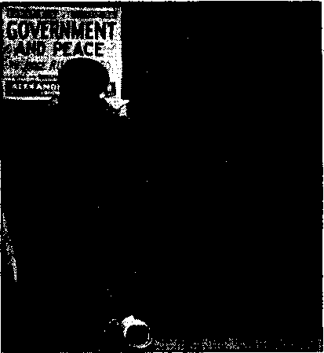
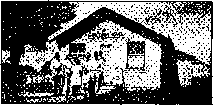
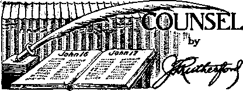

The Press and the Pope’s Encyclical
Counsel by J. F. Rutherford
Under tb&.-T’oFalitarian Flag
’ Prefers Hitler to Washington
Christian Liberty in Burlington, Vt.
British Comment
Tribunal and Jehovah’s witnesses
............................ II
Published every other Wednesday by WATCHTOWER BIBLE AND TRACT SOCIETY, INC.
117 Adams St,, Brooklyn, N, Y.. U. S, A.
Editor Clayton J. Woodworth
Business Managap ■ Nathan H. Knorr
Five Cents a Copy
fl a year In the United States ft.SS to Canada and all other countries
NOTICE TO SUBSCRIBERS
Remittances: For your own safety, remit by postal or express money order. When coin or currency is lost In the ordinary malls, there Is no redress. Remittances from countries other than those named below may be made to the Brooklyn office, but only by International postal money order.
Rsoelpt of a now or renewal subscription will be acknowledged only when requested. Notice of Expiration is sent with tho Journal one month before subscription expires. Please renew promptly to avoid loss of copies. Send change of addreee direct to us rather than to the post office. Your request should reach us at least two weeks before the date of issue with which It is to take effect. Bend your old as well as the new address. Copies will not be forwarded by the poet office to your new address unless extra postage is provided by you. Published also in Afrikaans, Bohemian, Danish, Dutch, Finnish, French, German, Greek. Hungarian, Japanese, Norwegian, Polish, Portuguese, Spanish, Swedish, Ukrainian; also special Australian edition in English.
OFFICES FOR OTHER COUNTRIES
England 34 Craven Terrace, London, W. 2
Canada 40 Irwin Avenue, Toronto S, Ontario Australia 7 Beresford Road, Strathfield, N.S.W. South Africa 623 Boston House, Cape Town
Entered as secetid-class matter at Brooklyn, N. Y., ■under the Act of March 3, 1B79.
Satisfactory Results
An Irish soldier in France during ^ie World War received a letter .
I ? from his wife, saying there wasn’t L an able-bodied man left, and she ' was going to dig the garden herself. Pat wrote at the beginning of his next letter : “Bridget, please don’t dig the garden; that’s w’here the guns are.”
The letter was duly Censoredand in a short time a lorrydoad of men in khaki arrived at Pat’s house and proceeded to dig the garden from end to end.
Bridget wrote to Pat in desperation, saying that she didn’t know what to do, as the soldiers had got the garden dug up, every bit of it.
Pat’s reply was short and to the point: “Put in the spuds.”
Tima for Tender Remembrance
Pat arrived home much the worse for wear. One eye was closed, his nose broken, and his face lotted as though it had been stung by bees. , .
“That Dutchman—’twas him,” exploded his wife. “A big man like you to get beaten up by a little fool of a Dutchman, the size of him! Why—” .
“Whist, Nora,” said Pat, “don’t speak disrespectfully of the deadLabor.
Going Out the Other Way
Two Irishmen were fold to clean out a well. Mike was being lowered by Pat when suddenly he cried out, “Pat, pull me up.”
“You’re all right, Mike,” said Pat reassuringly.
■ “Pull me up.”
“Go on, you’re all right.”
“Pull me up,” yelled the exasperated Mike, “or I’ll cut the rope.”
Ai Mickey Would Say It
The teacher was trying to impress upon her young pupils in the tenement district the importance of being original. She illustrated by saying:
“Mickey, repeat these sentences in your own words: ‘I see a eow. The cow is pretty. The cow can run.’ ”
Mickey said: “Boy, lamp de cow. Ain’t she a honey! An’ I ask you, kin she take it on de lam?” .
“And in His name shall the nations hope.”—Matthew 12:21, A.R.V.
Volume XXI Brooklyn, N. Y., Wednesday, March 6, 1940 Number 834
The Press and the Pope’s Encyclical
THE Press has been slavish in its ■ servitude to its lord and master, the Roman Catholic Hierarchy, and 1 __ has deceived the American people
— as to the true aims and purposes of the pope in America. Each time the pope is quoted his words are so interpreted that they receive the most favorable reaction from the American people. That this interpretation is seldom the true on^ will be hereinafter demonstrated. That it is the official interpretation from Papal publicists goes without say-irig, since the Hierarchy will tolerate nothing but absolute obedience from the press in these matters, as has been proved times without number.
That the reason for this false face is deception pure and simple should surprise no one. The ramifications of this deceit can be well understood if we remember that in every country the “Church” has a program; in every country she faces strong opposition; and'in every country she dare not reveal her aims or permit anyone to expose them, lest she lose valuable advantages—the advantages a concealed enemy has over an open one. And so for each country she has to have her words interpreted, if only to disarm or confuse her opponents. In this respect she plays the lowest politics on earth and profits greatly thereby.
The intelligent few, politician or patriot, will not be deceived; the rulers of this wicked world will understand her meanings, but the great mass of humanity will continue in the dark until such time as she is powerful enough to come boldly into the open, as in Hitler Germany.
Hypocritical Blubbering About Peace .
As an offhand example of the servitude of the press: Can anyone recall a newspaper that dared to compare the pope’s blubbering about peace with his conduct in the Spanish war, MARCH 8, 1940 when his two devoted stooges, Hitler and Mussolini, rushed in to save Franco from the thrashing he was getting?
A more recent example of the parochial slavery of the press is found in the following dispatch on the front page of the Philadelphia Inquirer for October 30. In it will be found all the elements of deception and misinterpretation.
Pointed Inference ;
‘Christian’ Laws Get High Praise
By Jiimea M. Mini fie
Special Cable to Tfte Inquirer and *Vew Yorfc Zferaid Tribune
Rome Oct. 2£>.—Pope Pfusr XII, consecrating 12 tnla-senary bishops in st. Peter’s today, made his homily the occasion for a condemnation of tyranny, which was obviously pointed at Germany and RusJda.
It was done in the oblique way ao favored by the Vatl-can, but there could be no mistaking the Pope’s speech, particularly after his denunciation in last Friday's encyclical of the practices of the agnostic and atheistic superstates,
By ignoring the truth about the pope’s real attitude toward tolerance, and with an eye to what the American reader wants to hear, the impression is definitely left behind in the mind of the unwary that the greatest enemies of the religious racket on earth are the Reds and Nazis. Nothing could be farther from the truth. Compare this misinformation with the statement of E. Boyd Barrett in his book, Rome Stoops to Conquer, concerning the Cath-Z olic church in Germany, and add to it the fact that the present pope; then a cardinal, secured Hitler’s alliance with Papacy in thfl concordat made with him.
Conepiracy Against America
That many of the pronouncements of the pope are against the interests of the American people is a fact beyond possibility of refutation. That the press has never exposed these aims for the benefit of the American people is a crime of blackest violence against them. On the contrary, the press has gone out of its way to assist the Vatican in its conspiracy
against everything American. It has concealed its underhand methods in world politics ; it has concealed its dirty tracks in ’ every sort of persecution of innocent people; and, worst of all, as in the above headline, it has concealed the fact that the pope and Hierarchy are Fascist and that every Catholic church in this fair land is a hotbed of Fascism, Nazism and plots to wreck the Constitution, the Supreme Court and the American way of government.
That this deception is fully intended by the press shows that they are in agreement—in conspiracy with the Vatican against America, and in order that she may accomplish her aims hefore the people awake to their dangers.
This concealment of the diabolical aims and methods of the Hierarchy is especially evident in the report’ ing of Pius XII's first encyclical. On the first page of the Philadel
phia Inquirer of October 27 appeared the following dispatch: »
Pope Denounces Dictatob Nations ;
Asks Just Peace
Appeals for Poles in First Encyclical Since Taking Reign By James M. Mini fie
. Special Cable to The Inquirer .
I and New York Herald Tribune
Rt)ME, Oct. 27.—In stronger terms than he had yet used, Pope Pius XII today condemned the invasion of Poland, the tearing up of treaties and the suppression of the freedom of conscience by agnostic and atheistic super-States, in the first encyclical of his reign. The immediate political repercussions are expected to be strong. But it can be said on high authority that the Pope is less concerned with these than with the conflict between the family and the State, which is the essence of his encyclical.
PONTIFF'S THEME. Issued in Castel Gandolfo and dated Oct. 20, this 13,000-word letter “to the Patriarchs, primates, archbishops, bishops and other ordinaries, in peace and communion with the Apostolic See,” was given to the press in Latin and translations in English, French, German and Italian, in the Sala Regia of the Vatican at 12.30 this afternoon. The Pope’s theme is the struggle of “That noble little cell, the family,’’ against the all-engulfing totalitarian State, rapacious, pagan, avid of sacrifice and intolerant of Opposition even in thought and conscience.
MEANS REICH, SOVIET. It is a picture of St. George and the Dragon, with the Saint getting very much the worse, at the moment, painted against a fiery background of European war, in which “the blood Of countless human beings, even non-combatants, raises a piteous dirge over a nation such as our dear Poland, which 'for its fidelity to the Church, for its services in the defense of Christian civilization, written in indelible characters in the annals of history, has a right to the generous and brotherly sympathy of the whole world, while it awaits, relying on the powerful intercession of Mary, Help of Christians, the hour of its resurrection, in harmony with the principles of justice and true peace.’’ Without specifically naming Germany and Russia, the encyclical made it clear, even to Nazis and Bolsheviks, that these States were meant.
SUPER-STATE CONDEMNED. At the same time, the Pope made no obvious effort not to implicate Italy in his condemnation of totalitarianism. This much is evident in his oblique references tb the work of the Catholic Action, which continues in Italy.. And. the Nazis and Bolsheviks are clearly indicated as examples of utilitarian morality, absolute autonomy and the suppression of conscience which “can attain at times, under chance circumstances, material; successes apt to arouse wonder In superficial observers. ” The super-state is condemned in these passagesr “To con
I . ... . J. - " l-l .'■■■■ ■ ■. ■■
4 -
elder the State as something ultimate^ to which everything else should be subordinated and directed can not fail to h£rm the? true and lasting prosperity of nations.” ’
'ROBS LAW OF NATIONS.’ And again, “The idea which credits the State with unlimited authority is not simply an error harmful to the internal life of nations, to their prosperity, to the larger and well ordered increase in their well-being, but likewise of the rela-tlons between peoples, robs the law of nations of its foundations and vigor, leads, to violation of others’ rights, and impedes agreement and peaceful inter -course.” If there could be any doubt about the States which the Pope had in mind, it would be removed by the subsequent passage with its thinly veiled allusion to the non-aggression treaties with Poland, torn up first by Fuehrer Adolf Hitler and then by Josef Stalin.
LOOKS TO FUTURE. After recognizing that treaties need revision with the passage of time, the encyclical proceeds: “But to consider treaties on principles as ephemeral and tacitly to assume the authority of rescinding them unilaterally when they are no longer to one’s advantage, would be to abolish all mutual trust among States. In this way natural order would be destroyed. There would be seen dug between different peoples and nations trenches of division impossible to refill,” Finally, the Pope asks what will result after the war, and sees no possible settlement, except one which / is based on justice and equity to all. The Pope ex-presse 1 the hope that the principles of lasting peace would be applied by “those States, neutral before the outbreak of the war, who nobly toiled to avert such a scourge from the peoples.”
TRIBUTE TO COURAGE. The Pope probes to the root of modern discontent, and declares that mankind must be re-educated spiritually and religiously in ways of justice and charity. Undoubtedly the most moving passages in the encyclical are those referring to the forgotten man, fighting for his soul against the encroachments of the super-State. Tribute is paid to “the true courage and heroism” of the average man, struggling against “the dally weight of misery, growing want and Restrictions on a scale never before experienced, whose reason and necessity are not always apparent.” (Copyright 1939)
The Lying Headline
x The headline is, of course, the usual lie that the pope is against dictators, notwithstanding the fact that no reference is made to dictators, by name or inference even once, in the entire text of the screed itself. That this is the interpretation the Vatican wanted served up to Americans is proved by the fact that it was cabled from Rome, and, as George Seldes points out in his book Freedom of the Press, under Chapter XIV,J titled “The Poisoned Springs of World News”, no reporter can remain in Rome who goes counter to Fascist (Papal) wishes. It should keep the American people happy to realize that in Mussolini's and Pius' Italy they are rated as fools or worse. See the above-cited authority.
The full magnitude of this criminal distortion of news, this treacherous betrayal of American ideals and institutions into the hands of the Vatican gangsters by the press, will be comprehended when this fact is known: The pope's vaunted encyclical is not directed against dictators and totalitarian states, but i^ aimed squarely and viciously against the United States of America—against her free
. -1 -l ■ ■■■ ■ । ■ ■ -- ■- 1 T- ' ■ ► ' ' ■ -
CONSOLATION
dam, the rights of her citizens, her laws and ideals of a just and free government. .
Hence the necessity for deceit. It would not sit well on too many stomachs to know that our own government is to be superseded in all essential points by a government composed of beskirted Italians from a famous brothel near Borne, steeped in the centuries of oppression, persecution and bloodshed of Catholic tradition and Catholic Europe.
Lcap year
But this end will be brought about by the aid of traitors to the American system, traitors beside whom Benedict Arnold would refuse to stand or be found dead with. While the great body of the American people are deceived and kept in ignorance of this black crime, cheap politicians, big businessmen and Protestant clergy, all with Fascist ambitions, will cooperate with or give in to Catholic Action, and the liberal laws and ideals that have kept this nation apart from the filth and national crime of the rest of the world will be swept away, and the intolerance and chaos of totalitarianism will take their place.
To prove these charges, all that is necessary is to compare the press interpretation of this encyclical with the encyclical itself.
The Harlot’s Mirror
An encyclical, says Webster, is a circular letter addressed to a number of people, and one especially from the pope. This is a scant definition. Webster has been dead a long time. It should be added in strict regard for truth that a papal encyclical is a billet-doux which the old Harlot addresses to herself, and which letter she coyly and carefully places in such hands as will insure its being read by her lovers, the Rulers of this Wicked World. It is, in fact, an amorous annotation of the number of things she requires in return-for her favors. The natural result of age-old experience in prostitution.
Of course, it is necessary to wear the garb of sweetness and virtue; so it is to be expected that these incestuous communications are robed in the noblest scriptures, and embroidered with the loftiest expressions. For that reason, all should beware that, when she mouths “Christianity” she means Catholicism ; when she mentions Divinity she means herself; when she mentions Christ she means herself as His vicar; when she blubbers about “Christianity” she means her own particular brand of religious racketeering; and that in all places, at all times, she usurps the place of God, purloins His holiest titles, perverts His righteous truths and purposes, and thus deceives countless millions.
It should be further kept in mind that her power has multiplied many times in recent years, that she thrives on just the sort of distress the world is in today, that she is able to carry out her threats; and that such things as wars, bloodshed and violence have ever been the tools of her trade, and that with these tools ready at hand she can now aim high, and that in every country she is feared as a trouble-maker.
Self-made Glory
Beginning her letter with a long introduction in which she praises herself for her ‘wisdom’, and reminds the world that she is the ‘vicar of Christ’ and the only one commissioned to preach the gospel of Christ, she then hurries on to other more important matters, such things as the upswing in toe-kissing, and nearly bursts her brassiere with pride because
MARCH 6, 1940
business is picking up and prostitution will . show a big profit come 1940.
We must, in obedience to an Inner prompting, make special mention of our gratitude for the tokens of reverent homage which we have had from the sovereigns, heads of States and Governments of those nations with which the Holy See is in friendly relations.
And don’t laugh at the next one; it isn’t really funny. The fact is that “God” was busy somewhere else and she had to rely on a notorious gangster and the Mafia to restore “the peace of Christ to Italy”. Such joy she has.
“The peace of Chrigt restored to Italy," like a new dawn of brotherly uhfOn in religious and In civil intercourse, hud Its Beginning in these pacts.
PRAYBR FOR ITALIANS. We pray God that in the «t atmosphere of that peace He may pervade, ty, strengthen and fortify the heart of the Italian < people, so close to us, In the midst of which we live, with which we share the very air we breathe. We hope and trust that that people, so dear to our predecessors and tp us, may he faithful to Its glorious Catholic tradition, and experience through the divine protection ever more tHrtt truth of the psalmist; “Happy is that people whose God is the Lord” (Psalm 143.15).
But her joy is short-lived. For it seems that, with the Spanish Loyalists (which she hounded to an untimely end) scarcely rotted in their graves, she has terrible news of war. She should quit reading the Totalitarian dailies— she’s behind on the news.
TERRIBLE NEWS OF WAR. Venerable brethren, as we write these lines the terrible news comes to ua that the dread tempest of war is already raging despite all our efforts to avert It. When we think of the wave of suffering that has come on countless people who but yesterday enjoyed in the environment of their homes some little degree of well-being, we are tempted to lay down our pen.
Europe Started It
The most curious part is now imminent; for she unintentionally accuses herself of complicity in a number of colossal crimes, when she states, accurately, that the evils of the present totalitarian world started in Europe —Europe, the birthplace and home of Catholicism and Papal tyranny—and, wonder of wonders, further implies that even in the days' of her splendor and power, when she ruled supreme, all was not serene. So one must conclude that she acknowledges sowing the wind which resulted in the present whirlwind.
EVIL STARTED IN EUROPE. The denial of the fundamentals of morality had Its origin in Europe, in the abandonment of that Christian teaching of which the chair of Peter is the depository and exponent. That teaching hud once given spiritual cohesion to a Europe Which, educated, ennobled and civilized by the Cross, had reached such a degree of civil progress as to become the teacher of other peoples, of other continents; but, cut oft from the Infallible teaching authority of the church, not a few separated brethren have gone bo far as to overthrow the central dogma of Christianity, the Divinity of the Saviour, and have hastened thereby the progress of spiritual decay.
WEAKENING OF STATES. With the weakening of faith In God and in Jesus Christ, and the darkening tn men’» minds of the light of moral principles, there disappeared the Indispensable foundation of the stability and quiet of that Internal apd external, private jrf.nd public order, which bIobo oan support and safeguard the prosperity of States. It is true that even when Europe had a ooheeion of brotherhood through identical ideals gathered from Christian preaching, she was not free from divisions, convulsions and wars which laid hex waste: but perhaps they never felt the Intense pessimism of today as to the possibility of settling them, for they had then an effective moral sense of the just and of the unjust, of the lawful and of the unlawful which by restraining outbreaks of passion, left the way open to an honorable settlement. In our days, on the contrary, dissensions come not only from the surge of rebellious pass ion, but also from a deep spiritual crisis which has overthrown the sound principles of private and public morality.
Her “Human Unity” Joke
After prating of human unity (and small use she has for it), and contradictorily going to bat foF nationalism, toot she proceeds to give to a waiting world her idea of equality. And that equality, venerable brethren, is nothing less than that she always tries, if possible, to appoint native bishops and clerics.
Nor need we tell you, venerable brethren, that we intend to proceed without hesitation along this way. Those who enter the Church, whatever be their origin or their speech, must know that they have equal right® as children in the House of the Lord, where the law of Christ and the peace of Christ prevail. In accordance with these principles of equality tho Church devotes her care to forming a cultured native clergy and gradually increasing the number of native bishops.
With this appliquM doggerel off her chest she settles down and wadefe right into the real business at hand. This is the point where exposes her ambitions and desires for the future, and as such they emerge as an ultimatum or exaction. And it is this true nature of her words that the press failed to mention, thus taking sides with religious racketeering as against freedom and enlightenment. If the press had any excuse for its conduct nothing could be said; but newspaper editors themselves brag of the all-wise press, sees all, knows all, etc. So we must conclude that all that was done was done willfully and with malice aforethought.*
In view of the facts, it cannot be proved that her denunciations are against Nazis and Reds. Her own words about Mussolini’s place in Italy demonstrates that she doesn’t mean Fascism. Her trafficking with Hitler in Spain and Germany demonstrates that she doesn’t
•[If the reader suspects that these reflections on the complete untrust worthiness of the public press are in any wise overdrawn he is invited to read again the article entitled “Suppression, Distortion, and Reversal of News” which constituted the leading article in Consolation No. 475, issue of December 1, 1937. Therein he will see how an innocent Italian was done to death by a judge and a wealthy citizen and the thing was so handled by the police and the press that the poor man's death was made to seem to be a real advantage to society.—E<£.] meari Natifiin. The fact that she is in alliance with Stalin Via Hitler demonstrates that she couldn’t mean Communism. The conduct of all these squires in regard to freedom, real Christianity, and wanton bloodshed demonstrates their oneness of mind with her. ‘
Her Eyes on Uncle Sam
ft Qlust b0’ ^ien> that ^eT word3 V y"/ are addressed to someone else. To
30ine such country, for instance, that has not embraced her as the way of life. Some country not yet entirely resigned to the totalitarian idea, such as the United States of America, or perhaps to a lesser degree, Great Britain. In brief, her words remind all such that they “have not grasped the importance of the educational and pastoral mission of the church” and that they “will now understand better her warnings, scouted in the false security of the past”; referring, no doubt, to that blessed time before totalitarian Catholic Action was inaugurated, and which time is past and security from Roman Catholic gangsterism is over and gone. Thus she warns them and,prophesies that they will be docile. The reason will appear more fully later.
HOPE FOR NEW OUTLOOK, Ferhaps—God grant It—one may hope that this hour of direst need may bring a change of outlook and sentlmsnt to those many who till now have walked with blind faith along the path of popular modern errors unconscious of the treacherous and insecure ground on which they trod. Perhaps the many who have not grasped the importance of the educational and pastoral mission of-the Church will now understand better her warnings, scouted in the false security of the past.
Warming to her subject she fills three newsprint columns with denunciations of those governments that maintain separation of church (her church) and state, and babbles about how they usurp the place of God (herself as “vicar”), and fail to support Catholic education; Warbles about ties of family and its integrity, just as though she hadn’t but recently destroyed or corrupted countless thousands upon millions of families as in her past.
But there is yet another error no less pernicious to the well-being of the nations and to the prosperity of that great human society which gathers together and embraces within its confines all races. It is the error contained In those ideas which do not hesitate to divorce civil authority from every kind of dependence upon the Supreme Being—first cause and absolute master of man and of society—-and from every restraint of a higher law derived from God ns from its first source. Thus they accord -the civil authority an unrestricted field of action that Is at the mercy or a changeful tide of human will, or of the-dictates of casual historical claims and of the Interests of a few.
USURPING PLACE OF GOD. Once the authority of God and their sway of His law are denied in this way, the civil authority as an inevitable result tends to at-, MARCH B, IMO
tribute to Itself that absolute autonomy-which h elonge exclusively to the Supreme Maker. It puts Itself in the place of the Almighty and elevates the State or group Into the last end of life, the supreme criterion of the moral and juridical order, and therefore forbida every appeal to the principles of natural reason and of the Christian conscience. We do not, of course, fail to recognise that, fortunately, false principles do not always exercise their full Influence, especially when age-old Christian traditions, on which the peoples have been nurtured, remain still deeply even if unconsciously rooted in their hearts.
Would Fain Grab the Youth
r MB This hypercritical pose is carried W to great lengths in her charge that y- -.J® certain states stand in the way of proper religious training—-and, as in America, prevent her from proselyting Protestant’s children.
In any case, the more burdensome the material aac-rificae demanded of the individual and the family by the State, the more must the rights of conscience he to it sacred and inviolable. Goods, blood It can demand; but the soul redeemed by God, never. The charge laid by God on parents to provide for the material and spiritual good of their offspring and to procure for them a suitable training saturated with the true spirit of religion, cannot be wrested from them without grave violation of their rights.
As Barrett has shown, her educational privileges have not been interfered with in Germany, and by her own words, certainly not in Italy. It is certain that these two Brutes find use for her in their vile schemes to enslave the world. It must follow then that she means some other country where parochial schools are not state supported.
She now leads with a feint that will be followed by a real declaration—just to ease the unwilling up to her trough. She refers lovingly to ecclesiastical laws, which she surely means when she mentions divine laws. To her, we are led to conclude, the state must come for its laws, its machinery and ideals of justice, war, peace, education and religion; for she is the sole keeper and repository of divine law; we must not forget she is the 'vicar of Christ’.
NO SAFETY IN SWORD. No, venerable brethren, safety does not come to peoples from external means, from the sword, which can impose conditions of peace but does not create peace. Forces that are to renew the face of the earth, should proceed from within, from the spirit. Once the bitterness and the cruel strifes of the present have ceased, the new order of the world, of national and international life must rest no longer on the quicksands of changeable and ephemeral standards that-depute only on the aelftsh interrata of groups and Individuals. No, they must rest on the unshakeable foundation, on the solid rock of natural law add of divine revelation. There the human legislator must attain to that balance, that keen sense of moral responsibility, without which it Is easy to mistake the boundary between the legitimate use and the abuse of power.
Public Schools Must Go (?) ■
Helpfully she outlines a program; for such an upheaval of social and religious affairs will require some planning. Re-education is needed. A new understanding of Catholicism—not by Nazi Germany or Fascist Italy, as has been pointed out, but by all such as do not yet acknowledge the papal throne as head of the world. And since the archbishop of Canterbury has signified his desire for an arrangement, she must mean—you guessed it—good old United States of America. It seems then that we are all due to learn of her priceless boons, her “purgatory”, her hell, her cheap “saints”, her miraculous medals, and her big- ' otry. ”
TASK OF RE-EDUCATION. If it is to have any effect, the re-education of mankind must be above all things, spiritual and religious. Hence, it must proceed from Christ as from its indispensable foundation; must be actuated by justice and crowned by charity. The accomplishment of this task of regeneration, by adapting her means to the altered conditions of the times and to the new needs of the human race, is an essential and maternal office of the church. Committed to her by her Divine founder the preaching of the gospel, by which is inculcated to men truth, justice and charity and the*endeavor to implant its precepts solidly In mind and conscience. Is the most noble and most fruitful work for peace.
Skipping a few hundred words as we must do from time to time, we find her fearful lest some advocate of freedom treat her claims lightly. To scotch such blasphemy, she begins to dwell lovingly upon the mission of the church militant. She reminds her subjects that great sacrifices are to be required, that their hope should be bright, their faith strong, because now she has the world by the tail and it can’t get away, and that if they are obedient to her commands they will participate in the re-establishment of the “Kingdom of God”.
That mission would seem as if it ought to discourage by Its very grandeur the hearts of those who make up the church militant. But that co-operation in the spread of the Kingdom of God which in every century is effected In different ways, with varying instruments, with manifold hard struggles, a& a command incumbent on everyone who has been snatched by Divine grace from the slavery of Satan and called In Baptism to citizenship of the Kingdom of God.
With such a build-up, she now unfolds to a big-eyed or snoring world that Catholic Action is her right aim; she dotes on it, praises it for its zeal and obedience, and no doubt has in mind its diabolical violence against Jehovah’s witnesses, its thrust of censorship in press and radio, its political pressures and secret societies. Thus she reminds all rulers, bureaucrats and politicians that she is a power to be reckoned with.
SPUR TO FAITH. And if belonging to it, living according to its spirit, laboring for Its increase and placing its benefits at the disposition of that ’portion of mankind also which as yet has no part in them, means in our days having to face obstacles and oppositions as vast and deep and minutely organized as never before, that does ndt dispense a man from the frank, bold profession of our faith. Rather, it spurs one to stand fast in the conflict even at the price of the greatest sacrifices. Whoever lives by the spirit of Christ refuses to let himself be beaten down by the difficulties which oppose him, but on the contrary feels himself impelled to work with all his strength and with the fullest confidence in God.
Her History as Teacher
Visualizing this ancient bawd as teacher, who can help recalling her past efforts in this line, accurately summed up by H. G. Wells in his “Outline”, page 656:
And the intolerance of the church was not confined to religious matters. The shrewd, pompous, irascible, and rather malignant old men who manifestly constituted a dominant majority in the councils of the church Tescnted any knowledge but their own knowledge and distrusted any thought at all that they did not correct and control. They set themselves to restrain science, of which they were evidently jealous. Any mental activity but their own struck them as being insolent. . . .
Had this intolerance sprung from a real intensity of conviction it would have been bad enough, but it was accompanied by a scarcely disguised contempt for the intelligence and mental dignity of the common man that makes it far less acceptable to our modern judgments, and which no doubt made it far less acceptable to the free spirits. , , .
It entangled itself with archaic traditions of human sacrifice, with Mithraic blood-cleansing, with priestcraft as ancient as human society, and with elaborate doctrines about the structure of the divinity. The gory finger of the Etruscan pontifex maximus emphasized the teachings of Jesus of Nazareth ; the mental complexity of the Alexandrian Greek entangled them. In the inevitable jungle of these incompatibles the church became dogmatic. In despair of other solutions to its intellectual discords it had resorted to arbitrary authority. Its priests and bishops were more and more men moulded to creeds and dogmas and set procedures; by the time they became cardinals or popes they were usually oldish men, habituated to a political struggle for immediate ends, . . . They were prepared to bargain even with hates and fears and lusts in men’s hearts to ensure that power. . . . They were intolerant of questions or dissent. . . . By the thirteenth century the church was evidently already morbidly anxious about the gnawing doubts that might presently lay the whole structure of its pretensions in ruins. ... It was hunting everywhere for heretics as timid old ladies are said to look under beds and in cupboards for burglars before retiring for the night.
Continuing from the encyclical:
He does not draw back before the straits and the necessities of the moment, but faces their severity ready to give aid with that love which flees no sacrifice, is stronger than death, and will not be quenched by the rushing waters ot tribulation. It gives us, ven-erAbie-brethren, an Inward strength, a heavenly joy, for which we daily render to God our deep and humble thanks, to see in every region of the Catholic world evident signs of a spirit which boldly faces the gigantic tasks of our age, which with generous decision is Intent on uniting, in fruitful harmony the first and essential duty of individual sanctification, and apostolic activity for the spread of the Kingdom of God.
And if this is not sufficient she further reminds them that she has reserves of strength which she can hardly sufficiently prize for their usefulness at this time. She is referring to the power of Catholic Action embodied in the laity, loyally soldiering her aims, and filling in where there is a shortage of the crop of priests.
RESERVES OF STRENGTH. From the movement of the Eucharistic Congresses furthered with loving care by our predecessors and from the collaboration of the laity formed in Catholic Action towards a deep realisation of their noble mission, flow forth fountains of grace and reserves of strength, which could hardly be sufficiently prized in the present time, when threats are more numerous, needs multiply and the conflict between Christianity and anti-Chrlstiantsm grows intense. At a moment when one is forced to note with sorrow the disproportion between the number of priests and the calls upon them, when one sees that even today the words of Our Saviour apply: "The harvest indeed is great, but the laborers are few” (St. Matthew 3, 37; St. Luke 10, 2). the collaboration of the laity in the apostolate of the Hierarchy, a collaboration Indeed given by many and animated with ardent zeal and generous self-devotion, stands out as a precious aid to the work of priests and shows possibilities of development which justify the brightest hopes.
The Real Target
It is scarcely necessary to show that this Totalitarian war is a product of her best exponent of Catholic Action, Adolf Hitler, and that such a threat as this can scarcely be comprehended in its scope. That the United States is the target of this war is proved by the attempt made to force her into it—into the Totalitarian way of life, which same has brought the “peace of Christ to Italy’’. Coupled with this grave danger is the constant whittling away of American freedom, the constant attacks on our schools, colleges and other liberal institutions, by the bloated ecclesiastics in high places, who use the word “Communism” when they really mean “heresy”, and who daily bleat of a lack of religious faith, when they mean that the people are not sufficiently priest-ridden to satisfy their greed for money, power and the praise of men.
Having in mind the sendees of those fanatical and criminal elements of the Catholic population which she has depraved—and which same have always, through the centuries until now, made possible such colossal hooliganism as the Crusades—she now pats them on the back and gives them to understand, by quot-
MARCH 8, 1040 ing a passage from “Saint” Augustine, that it is just possible that they might be consecrated members of the “church” instead of merely members of the exploited Catholic population. In other words, she is preparing them for the murders to come.
WORKERS ENOUGH. Prayer of the Church to the Lord of the Harvest that he send workers into his vineyard (cf. St. Matthew 9, 37; St. Luke 10, 2) h&3 been granted to a degree proportionate to the present needs, and In a manner which supplements and completes the powers, often obstructed and inadequate, of the priestly a postdate, Numbers of fervent men and women, of youth obedient to the voice of the Supreme Pastor and to the directions of their bishops, consecrate themselves with the full ardor of their soul to the works of the apostolate in order to bring back to Christ the masses of peoples who have been separated from Him. To them in this moment so critical for the church and for mankind go out our paternal greeting, our deepfelt gratitude, our confident hope. These have truly placed their life and their work beneath the standard of Christ the King: and they can say with the Psalmist: "I speak my words to the king” (Psalm 44t 1). ”Thy Kingdom Come" is not simply the burning desire of their prayers; it is, besides, the guide of their activity. This collaboration of the laity with the priesthood in all classes, categories and groups reveals precious Industry and to the laity is entrusted a mission 'than which noble and loyal hearts could desire none higher nor more consoling. This apostolic work, carried out according to the mind of the church, consecrates the layman rs a kind of 'minister to Christ” in the sense which St. Augustine explains as follows: "When, brethren, you hear our Lord saying: Where I am there too will my servant be, do not think solely of good bishops and clerics."
More Hooligans Needed
At this point she takes into account those of her subjects whose maturity of mind might rebel at seeing their children become serfs, “hoodlums or Nazis, as at Madison
Square Garden, and reminds them that they are little ecclesiastics and that they should make it their business to see that all school^ should have crucifixes in them.
DUTY OF FATHERS. You, too, in your way minister to Chrfst by a good.life, by almsgiving, by preaching His name and teaching to whom you can. Thus every father should recognize that it is under this title that he owes paternal affection to his family. Let it be for the sake of Christ and for life everlasting, that he admonishes all his household, teaches, exhorts, reproves.. shows kindness, corrects; and thus in his own, home he will fulfill an ecclesiastical and in a way an episcopal office ministering .to Christ, that lie may be forever with him. (On the Gospel according to St. John, Tract 13.) In promoting this participation by
the laity in the apostolate, which ia so important In our times, the family has a special mission, for It Is the spirit of the family that exercises the most powerful influence on that of the rising generation. As long as the sacred flame of the faith burns on the domestic hearth, and the parents forge and fashion the lives of their children In accordance with this faith, youth will be ever ready to acknowledge the royal prerogatives of The Redeemer, and to oppose those who wish to exclude Him from society ar wrongly to usurp His rights. When churches are closed, when the image of The Crucified is taken from the schools, the family remains the providential and in a certain sense impregnable refuge of Christian life.
FAMILIES STAY FIRM, And we give thanks to God as we «ee that numberless families accomplish this, th^lr mission, with a fidelity undismayed by combat or by sacrifice. A great host of young men and women, even In those regions where faith in Christ means
9
Buffering end persecution, remain firm around the throne of The Redeemer with a quiet steady deter-Sinatton that recalls the most glorlouB days of the lurch's struggles.
In parenthesis, while regarding this apparent care for the millions of priest-ridden victims, it is impossible to close one’s eyes to her centuries of doing just this; with fair words, holy pretensions and sacerdotal hocus-pocus, shamelessly urging, cajoling and firing them to sacrifice themselves upon the altar , of her depraved ambitions and filthy greed. American Catholics can expect to bear their share of this! offering to Moloch.
- Why on the High Horse
" Having now fully explained why she is on the high horse, that she is strong and is going places, she opines that the world is due for great distress and woe, and that these dire calamities can be averted by turning to the church, and conceding her to be the teacher of justice and love, which she says is hers by divine right. Making peace in this world would seem to imply that she really does control Catholic Action as exemplified in this Totalitarian war. Certainly the hen that laid the egg ought to know about eggs.
What torrents of benefits ■would be showered on the world, what light, order, what peace would accrue to social life, what unique and precious energies would contribute towards the betterment of mankind, if men would everywhere concede to the Church, teacher of justice and Jove, that liberty of action to which, in virtue of the divine mandate, she has a aacred and indisputable right’ What calamities could be averted, what happiness and tranquillity assured, if the social and international forces working to establish peace would let themselves be permeated by the deep lessons of the gospel of love in their struggle against Individual or collective egoism! Accordingly, we, as representative on earth ot Him who was proclaimed by the prophet “Frincc of Peace” (Isaiah 9, fl)* appeal to the rulers of the peoples, and to those who can in any way Influence public life, to let the Church have full liberty to fulfill her role as educator by teaching men truth, by Inculcating justice, and inflaming hearts with |he divine love of Christ. While the Church cannot renounce the exercise of this Her mission, which has for its final endi to realise here below the divine plan and to “re-establish all things in Christ, that are in Heaven and on Earth” (Ephesians 1,10), Her aid, none the less, is shown to be indispensable as never before, now that sad experience teaches that external means and human provisions and political expedients of themselves bring no efficacious healing to the ills Which affect mankind.
"Apostolic” Whoredom
jffa !■ Elaborating upon her “good” offices of teacher and shaper of youth, EKlna?? she seems to be amazed that anyone, even with a knowledge of her whoring past, should be suspicious of her intentions and professed Christianity. Against those suspicions she protests with the usual inquisitorial and infallible “apostolic sincerity”. She points out that she does not claim to take the place of or usurp the fat jobs of politicians, dictators, kings or presidents, but, rather, she teaches the children and youth to have respect—the hat-tipping, obsequious, heiling, goose-stepping kind—for such earthly authority.
And yet, venerable brethren, the teaching of Christ, which alone can furnish man with such solid basis of belief as will greatly enlarge his vision, and divinely dilate His heart and supply an efficacious remedy to the very grave difficulties of today—this and the activity of the church In teaching and spreading that doctrine, and in forming and modeling men's minds by Its precepts, are at times an object of suspicion, as If they shook the foundations of civil authority or . usurped its rights. Against such suspicions we solemnly declare with apostolic sincerity that—without prejudice to the declarations regarding the power of Christ and Of Hla church made by our predecessor Pius XI of venerable memory in his Encyclical "quas prim as” of December 11, 1925—any such aims are entirely alien to that same church, which spreads its maternal arms towards this world not to dominate but to serve. She does not claim to take the place of other legitimate authorities in their proper spheres, but offers them her help after the example and In the spirit of her Divine founder who “went about doing good” (Acts 10, 38), The Church preaches and inculcates obedience and respect for earthly authority which derives from God its whole origin and holds to the teaching of her Divine Master who said “Render therefore to Caesar the things that are Caesar’s” (St. Matthew 22, 21); she has no desire to usurp, and singe in the liturgy: “He takes away no earthly realms who gives us the celestial1* (hymn for Feast of Epiphany).
Winding up her long-winded tirade, veiled though it be, against freedom of worship and liberty for the people, she offers eternal 'peace and tranquillity’, and advises that since she is 'built on Christ’, she alone can give peace. And then with a final dream of a golden age at hand she visions a world of justice and love, where she will sit a queen, with the rulers of all nations for lovers and devoted slaves.
This peace, which the world cannot give, has been left as a heritage to His disciples by the Divine Redeemer Himself: *'Peace I leave with you. My peace I give unto you” (St. John 14, 27); and thus following the sublime teaching of Christ, summed up by Himself in the twofold precept of Love of God and of the neighbour, millions of souls have reached, are reaching ana shall reach peace. History, wisely called by a great Roman "the teacher of life,” has proved for close on 2000 years how true is the word of Scripture that he will not have peace who resists God. (Cf. Job 9, 4) For Christ alone is the “corner stone” (Ephesians 2, 20) on which man and society can find stability and salvation. On this corner stone the church Is built, and hence against her the adversary can never prevail: “The gates of hell shall not prevail” (St. Matthew 16, 18) nor can they ever weaken her; nay, rather. Internal and external struggles tend to augment the force and multiply the laurels of her victories. On the other hand, any other building which has not been founded solidly on the teaching of Christ rests on shifting Hands ana Is destined to perish miserably (cf. St* Matthews 7, 26* 27). .
A ’HOUR OF DARKNESS/ Venerable
, brethren, the hour wh&i this our first en-yg ftl* cyclical reaches you Is in many respects a real “hour ot darkness” (cf. St. Luke 22, S3J in whlch the spirit of violence and of discord brings indescribable suffering on mankind. Do we need to give assurance that our paternal heart is close to all our children in compassionate love and especially to the afflicted, the oppressed, the persecuted? The nations swept into the tragic whirlpool of war are perhaps as yet onlv at the “beginning of Borrows" (St, Matthew ■
M, now there reigns in thousands of fam
ilies d&ath &p.d < desolation, lamentation and misery. The blood of driuntleBS human beings, even non^coni-hatants, raises a piteous dirge over a nation such as our dear Poland, 'which, for its fidelity to the Church, for its services In the defense of Christian civilisation written in indelible characters In the annals of history, has a right to the generous and brotherly sympathy of the whole world, while it awaits, rely Inc on the f>owerful intercession of Mary, help of Christians, the lour of a resurrection in harmony with the principles of justice and true peace What has already happened find is still happening, waa presented, as it were, in a vision before our eyes when while still some hope was left, we left nothing undone in the form suggested to ue by our apostolic office and by the means at our disposal, to prevent recourse to arms and to kedp open the way to an understanding honourable to both parties.
PEACE PLEA A DUTY. Convinced thjit. the use of fore© on one side would be answered by recourse to arms on the other, we considered It a duty inseparable from our apostolic office and of Christian charity to try every means to spars mankind and Christianity the horrors of a world conflagration, even al. the ri9k of having our Intentions and our aims misunderstood. Our advice, if heard with respect, was not, however, followed and while our pastoral heart looks on with sorrow and foreboding, the imago of the Good Shep’ herd comes up before our gaze, and it seems as though WO ought to repeat to the world in HIh name: "if thou . . . had at known , , . the things that are to Thy peace; but now they are hidden from Thy eyes" (St. Luke 19, 42). In the midst of this world which today resents such a sharp contrast to "the peace of Christ In the reign of Christ," the Church and her faithful are in times and in years of trial such as have rarely been known in her history of struggle and suffering.
HOUR OF TRIAL. But In such times especially, he who remains firm in his faith and strung at heart knows that Christ the King j& never so near as in the hour of trial, which is the hour for fidelity. With a heart torn by the sufferings and afflictions of so many of her sons, but with the courage and the stability that come from the promises of our Lord, the spouse of Christ goes to meet the gathering storms. This sho knows, that the truth which she preaches, the charity Which she teaches and practices, will 'be the indis-pensable counsellors and aids tn men of good will in the reconstruction of a new world bused on justice and love, when mankind, weary from Its course along the way of error, has tasted the bitter fruits of hate and violence. In the meantime, however, venerable brethren, the world and all those who are stricken by the calamity of the war must know that the obligation of Christian love, the very foundation of the Kingdom of Christ, is not an empty word, but a living reality. A vast fipld openg up for Christian charity In all its forms. We have full confidence that all our sons, especially those who are not. being tried by the scourge of war, will be mindful in imitation of the Divine Samaritan, of all these who as victims of the war, have a right to compassion and help. The ^Catholic Church, the City of God, whose king is truth, whose law love and whose measure eternity ’ (St. Augustine, Ep, CXXXVTH ad Marcelllnum, C. 3, N. 17), preaching fearlessly t’he whole truth of Christ and toiling as the love of Christ demands with the zeal of a mother. . . .
Her Ruttish Highness
It is now time to take a crack at any who would prediet her down-fall, by calling to mind that she has xTsf 4g endured for “2000 years” and stood ' ' * ™ the test of time, and says in effect that she wears well and is just as attractive as ever—for purposes of international prostitution. And if any person or government believes all that Judge Rutherford has been saying, he is in for a hot time.
STOOP THE TEST* These last are recognizing in the Catholic church principles of belief and life that have stood the test or 2D09 years; the strong cohesion of the ecclesiastical hierarchy, which in union with the successor of Peter spends itself in enlightening minds with the teaching of the gospel, in guiding and sanctifying men. and which la generous In Its material condescension towards all, but firm when, even, at the cost of torments or martyrdom, it has to say: "Non Licet” "Il is not allowed J"
Knowing the desire of Americans for peace she dishes up potent medicine, well calculated to trap the ignorant and unwary, and in keeping with her scornful belief that we are a race of gullible fools. She feels that few of us know of her unchangeable wickedness, unchangeable cruelty, unchangeable lust for power, unchangeable greed for money, une hang cable craving for the praise of men and nations. She will soon say, “1 sit a queen and Am no widow.” No, she intends not to be a widow. This encyclical shows that she Intends to commit wholesale polyandry, Further, it shows that there is one certain country ripe for the plucking, that has been holding out on her, and that if that country desires peace, prosperity and happiness, it had better come running—bearing gifts. Gifts such as subsidies for parochial schools, recognition of herself as state church, enforcement of her ecclesiastical laws, enslavement of the people, and drastic alteration of the Constitution and Supreme Court.
To resist means to incur her displeasure, to face civil war, dictators, blood purges, concentration camps, and all the ‘blessed gifts’ of Totalitarian Germany and Italy. If this seems a harsh and cruel expedient. let us not forget that all her hypocritical life she has sacrificed the Catholic population in wars and insurrections for the sake of her own ambitions ; and if her own flesh and blood mean little to her, what consideration, do you suppose, will she give to non-Catholics—“heretics” to her—or their ideals of freedom and justice?
And, too, venerable brethren, let us not forget how assiduously she imitated the Divine Samaritan when she operated that flower of Catholicism- -the Holy Inquisition ; and also that other fragrant bouquet—the Crusades— the last of which now nurtures the soul of the Totalitarian monstrosity.
It will be somewhat comical, in the near future, to watch the antics of the same press, who helped her to power, try to escape suppression or Papal regulation, as in Franco’s Spain, Mussolini’s Italy, and Hitler’s Germany. —Joseph E. Bolden, Pennsylvania.
♦ Sioux Falls, South Dakota, is a splendid city of 36,000 inhabitants. It is the metropolis of the state, nestling fondly on both banks of the classic Sioux, about 100 miles north of Sioux City, Iowa. John T. McKee is the mayor and J. AV. Galvin is the acting chief of police. Leo Craig is a member of the National Organization of Knights of Columbus. He was recently ousted from membership of the State Board of Charities of South Dakota for irregularities in office. lie appealed to the State Supreme Court only to have that august body confirm the action of ex - Governor
which is just across the street, south, from the Cataract hotel, in the Minnehaha building—room 313, on the third floor.
Everything went on in regular order. J.w’s engaged in the service until about the middle of Saturday afternoon. At that time an information march began. Our western city was all agog with traffic and city hubbub all up and down Phillips and Main avenues. And then came the cavalcade of Jehovah’s witnesses with signs, mottoes, and banners, bearing witness to the country folk and city people that “religion is a snare and a racket”, that people should “serve God and Christ the King”, that “Christianity offers peace, prosperity, health, and everlasting life”. Signs also announced that “Government and Peace”, a lecture by Judge Rutherford, would be given at 2: 30 on Sunday in the ballroom of the Cataract hotel.
Regularly came the marchers, eaeh battalion going direct to its section of the city. Regularly they marched twenty feet from each other, moving slowly. Soon the
Complaints Reach Headquarters^^ were Eelzed those
—Advertising Seized Because radio* the streets had no permits.
- - - - - "It's necessary to get a permit
of No City Permiti Signs advertising a meeting of
Judge Rutherford's followers, car* rlcd about downtown streets Sat* urday night by doxens of people, were confiscated by police after ’'numerous complaints" reached headquarters,
"RehRion 1$ a snarl and a racket” read one bign. "Serve Christ the King1’ read another. Others advertised a talk by the judge, '‘Government- and Peace/’ to be Riven this afternoon by means of an electrical tramjcriptlon.
Desk Bgtu C. J. Rector said the
from city officials before you can carry those signs around the streets,” he told them. .
It was explained an ordinance requiring permits to parade' covered ! the case.
j Between 160 and 200 members of "JehoVah's witnesses " an organisation of Rutherford^ followers, were reported to have come to Sioux
! Falls from points in South Dakota. Minnesota, lows and Nebraska to attend "a district convention/1
j, c. Booth,. Brooklyn, N. Y., here io conduct, the session, whlcli opened Saturday. The 'meeting st the cataract hotel la scheduled for 2:30 p. m.
Leslie Jensen. J. H. Bechtold is reporter for the United States Government on weather conditions every morning; A, L. Burbank is an accountant employed in the city by an important service company; Stephen Pool is zone servant in South Dakota; J. C. Booth is regional servant from New York; John H. Barrett is manager of the Cataract hotel; Louis Horwitz is a Jewish attorney; W. O. Knight is an attorney and a former State senator and representative, and T. M. Bailey is also an attorney. So much for the cast of characters in the most interesting story you have heard since Hubbard, Ohio, became so well known in this pleasant, land of ours.
On September 23, 24, 1939, the zone servant called a meeting of Zone 1 of Iowa, Nebraska, Minnesota, and South Dakota at the Cataract hotel. The hotel grill and ballroom were contracted for for the meetings, which were held Saturday evening and all day Sunday,
The Sioux Falls company of Jehovah’s witnesses hold their meetings in Kingdom Hall, downtown district was literally alive with marchers; farmers stopped short and gazed wonderingly while they read the signs, one remarking, “I always knew there was somethin’ the matter with religion, but I didn’t know it was a ‘snake’; but you never can tell what them ‘preacher fellers’ are goin’ to do next.” Afternoon shoppers strolling down the streets stopped short while they read, and then moved along thoughtfully; workmen from shop, factory, and garage read the signs and rushed on, for it was Saturday night.
And thus the grand march continued, thousands of people reading, perhaps for the first time, of Nimrod’s universal racket, religion. Evening came, and with it telephone calls began to come in at police headquarters. The desk in the Cataract hotel lobby was besieged with telephone calls asking if the hotel manager, J. H. Barrett, was going to allow that “disgraceful crowd” to hold that “Judge Rutherford meeting tomorrow afternoon in your ballroom? If you do, you won’t get any more
Jehovah’s Kingdom publishers and Kingdom hall, San Bernardino, California
of our business”. And the phone was hung up with no reply when the name of the speaker was requested. In fact, hundreds of telephone calls eame in, practically all anonymous.
Finally, when scores and scores of marchers were out on duty, policemen were sent out and began to speak to them saying, “You can’t parade here without a permit.” “We are not parading, Officer; this is an information march. We are preaching the gospel and we are perfectly within our rights as guaranteed both by the Constitution of the United States and by the Constitution oi South Dakota.” That seemed reasonable to the “laws” and they went back to the station for further orders. But the calls were now coming in in such a torrent, that the chief said, “The wires are hot.”
Then the chief sent word to go out and get the signs and the marchers. At this point the writer had just finished a half-hour assignment and went along with a new battalion as a “plain clothes man” to see what was doing. Soon officers swooped down on a half dozen marchers and ordered them to “come on up to the station”. I asked the officer if these people were under arrest. “Well, they have to go on up to the station,” he said.
We all started for- the station then. Others were added to our group as we progressed. When we reached the station the sergeant began to take the names of the marchers, of whom there were now about 25. The writer stepped forward and requested information as to who was the complainant and what were the charges. He was asked, “Are these people with you?” I replied “Yes”. “All right, you go in there and see the chief,” the officer said. When I met Chief Galvin he picked up a sign ■ which read, “Religion Is a Snare and a Racket,” and he said, “Do you think this is a very good sign to carry around?” To which I replied, “Why, Chief, that’s the way wc preach the gospel.” At that moment Regional Servant Booth stepped up and offered an explanation, to which the chief listened attentively. Mr. Booth called the chief’s attention to the fact that the Constitution provides that people’s property could be confiscated only by due process of law. At length the chief admitted that he didn’t know what it was all about, and that the clamor of the “enraged” citizens was so insistent that he had to do something about it. As the hour was growing late the marchers were called in and the conventioners made ready for the morrow.
At this point it is well to introduce an incident that really was worthwhile. A reporter from the Argus-Leader, a newspaper of 40,000 circulation, called up Stephen Pool and wanted a full report of the particulars of the evening’s activities. Mr. Pool gave him full information. But more of this later.
At about 11; 00 p.m., after all had gone to their homes, the writer received a telephone call from the wife of John II. Barrett, the manager of the Cataract hotel. She was evidently in great distress of mind and almost tearfully informed me that a committee of Catholics and one of Jews had called at the hotel and filed a protest against Jehovah’s witnesses’ having their public meeting in the ballroom of the ho|el. I asked for an opportunity to meet the committee, and the manager’s wife said, “Yes, do come down; my husband is away and I don’t know what to do.” 'Hurriedly dressing, I drove down town, Stung joined by a witness who sensed the “smoke of battle”. On the way down ! called my attorney W. 0. Knight, who. by the way, was the attorney for the defendant in the only Bible ease in the history of South Dakota, which suit he won.
When I reached the hotel and went into the.manager’s office the Knights of Columbus committee, headed by Leo Craig, and consisting also of J. H. Bechtold and A. L. Burbank, arose and left the room in a body. Left by ourselves, Mr. Barrett (who had just returned) and I went into a huddle, as it were, regarding the situation. He said the Catholic people had just spent several hundred dollars installing a new bishop, named Brady, in the Cataract ballroom, and were planning to spend $500 more, but the committee had threatened to boycott the hotel management unless our lease was canceled. What would I do about it? I explained that we had incurred considerable expense to advertise the meeting and that we would have just cause for damages if we were thrown out. About that time our attorney arrived and went into the legal side of the matter. He pointed out to the manager that he knew these witnesses for Jehovah, had served them in a legal capacity, and found them “without fault except it be because of

Kingdom advertising in Leeds, England
14
“Fly-postihg” in London
their God”. Mr. Barrett thought it advisable to call the hotel’s attorney, T. M. Bailey, one of the outstanding legal minds of the city. After considerable “conversations” over the ’ phone Mr. Bailey stated in no uncertain terms that the J.w’s would have cause for action in court if they were thrown out by the hotel management. At this time Louis Horwitz, representing the Jewish element of the city, appeared in the office. Seeing me he addressed me jovially, asking what it was all about. Let it be said here that the Jews had been maneuvered into this “protest party” by the Knights of Columbus. As he entered Mr. Knight said, “Louie, of all the people on the earth today you should be among the most tolerant of any person.” After an explanation of what the whole'affair was, he expressed himself diplomatically to the effect that if it was a matter of business in which the manager would lose money by our meeting’s being held in the hotel ballroom, he would think it “good business” to eliminate any meeting that had been arranged for.
Followed much talk, consisting of questions and answers re the standing of the Watch Tower Bible and Tract Society of New York, Judge Rutherford, radio connections, etc., ete., ad infinitum. The writer suggested then that everybody go home and sleep on the matter
Teacher and seven pupils (six grades) of Millersville, Pennsylvania, Kingdom school
and that we resume “conversations” at ten o’clock the following Sunday morning. This was agreed on, and everybody’ adjourned (non sine die).
Back at my office again, T called up Zone Servant Pool and Regional Servant Booth at Davis, South Dakota, and explained the situation. They conferred and at length decided to be in Sioux Falls early in the morning.
But before anybody was up the next morning newsboys were out delivering thousands of copies of the Daily Argus-Leader to the bewildered citizens of the fair city of Sioux Dalls, South Dakota. And such a surprise! No wonder the savant said, “God moves in a mysterious way His wonders to perform.” And how wonderfully He had performed them during the nij^ht! For there, nestled in the center of the front page, where no money can buy, and only important news items can hope to secure a place, was printed with flaming headlines anti subhead, a two-column-wide news item telling all about the events of the previous evening, even announcing the public meeting in the Cataract hotel ballroom at 2; 30 p.m. The article is so good that we ‘reproduet! it here for your perusal.
[See page 1.2. -Ed. |
' ■ About ten o’clock we met in my office, and after again reviewing the matter at length our MARCH 6, 1940 attorney advised me to go alone to the office of the hotel manager and quietly tell him that there was no occasion for fear of the Hierarchy’s attempt to boycott the business of the hotel, but if they did there were hundreds of Masons who would see to it that more business would come to the hotel than was boycotted.
With that advice we went forward. When in the office, Mr. Barrett desired me to eat breakfast with him. When we were seated a most delightful conversation followed, after which he assured me that- we could go ahead and use the ballroom and that he hoped we didn’t need a couple of machine guns. I assured him that everything would go on in a perfectly normal way, that we would need no police protection, and that no one w’ould molest us. And it was even so. Everybody got out into the service and only a half-dozen J.w’s were apprehended by the police. They were brought to the police station, but it was upon the complaint of some poor soul w’ho knew not that she verily was—as Paul had been—a misguided religionist. They were released, and went right back to work in the • same block and finished the witnessing.
Came time at last for the meeting. Large numbers of J.w’s filled many of the seats and still the people kept coming until all the seating capacity was taken. The meeting progressed as advertised, thanks to the liberality of the Argus-Leader, as moved by the power of the great Jehovah God and Christ Jesus His Son.-—S. C. Oathout.
Advice to Liars
♦ On account of the great increase in lying, and the poor way in which much of it is done, it seems as if a student of newspapers, and of their lies, ought to be able to render some advice, based on evidence and information, A good illustration is at hand from the Casper
Kingdom hall, Tulare, California
15
(Wyo.) Times. A scarehead across the top of the paper and two stories aggregating fifteen inches of matter purport to tell that “Vet protective plans uncover subversive act; recent arrival here has Fascist sign on his auto; ear, flagged in red suspect as anti-Amer lean”, with the usual silly drool about “alleged activities" “in Nebraska" consisting of <cbearing signs of malicious and unpatriotic nature" by a person who “has no connection with any Casper patriotic?, fraternal, civic, union or unemployment association".
This was just a rotten piece of work on be-half^of the Roman Catholic Hierarchy, but it well decayed, and therefore well done, according to all standards of the “church". If the clippings had been sent complete, and not marked up, they would have been interesting to reproduce. Suffice it to say, however, that the “church" had the story shifted from Nebraska to Wyoming. Had it been published in the city where it occurred, everybody would have laughed at the poor liar who wrote it. The cleverness consisted in shifting the scenes so as to try to steam up a few boobs in Casper, and to kid them into thinking that they are patriots when they are first and foremost of the unpatriotic and un-American in the city.
The whole story revolves around the work of Jehovah’s witnesses, the spokesman for whom gives the facts in the following story:
I am enclosing a clipping from the Casper Times, dated September 20, 1939, The ear mentioned is my own, on whieh I carry a large bumper sign advertising the lecture “Fascism or Freedom", The investigation started as a result of putting on the lecture in Alliance, Nebraska, a town claimed to be 75-pereent Catholic,
We had been carrying on a campaign in Wyoming and Nebraska with the lecture “Fascism or Freedom”, in halls, parks and so forth, advertising it with the information march.
When I arrived in Alliance, Nebraska, there being no sound-ear ordinance, we decided on an open-air lecture in the city park, as the open-air lectures had brought the best results. Our local representative had made all arrangements with the mayor and city manager and, though permission was granted, no written permit was given,
Saturday evening a group from other towns was there to assist in the information march. There being a circus in town, we had a very good crowd on the street. A calliope started at the same time we did, but they soon realized they were advertising us; so they took a side street and turned over the town to us. After a few bleeks we ran into a group of Salvation Army people holding a meeting. As they had never seen anything like an inforinition march, they all gave a big sigh, as if the wind had been knocked out of them, and their meeting stopped.
Next day we arrived at the city park with an audience of 100 or more waiting for the lecture. When we got about halfway through Part One a cop stepped up and bruskly said, “Let me see your permit to do this." I stated that we had called on the authorities and they had given us permission, though we had nothing in writing, and that there is no sound ordinance anyway. He said, “You neglected to see the park commissioner.” I believe he called him “Mr. O’Connell". He then said he had orders from higher authority to stop us, as there is an ordinance against public speaking in the park, a statement I afterwards found to be a lie. Then I asked him what distance we were required to be from the park, and he said, “At least one block." So we announced that our lecture would be given on the street one block away. When we moved the majority got in their cars and followed us, parking on both sides of the street, within hearing distance.
When we reached Part Six the chief of police and a traffic cop drove up and said, “You can’t put that on here.” I told him the policeman had said it would be all right to put it on here. He said, “If you want to be decent, you can get a halt and put it on,” By that time the people were shouting for us to go on with the lecture; so it put the chief in a bad spot. I then said, “You can see we must continue the lecture, as a number of people have come to hear it.” I told him that we are sometimes interfered with by police under the influence of priests, and asked him if the Catholics had been making complaints. He turned red and stated, “I am not a Catholic. My reason for coming here is that you are creating a traffic hazard.” There was very little traffic on the streets. Then I asked him if there was an ordinance against being near the park. He told us that if we had a vacant lot no one could interfere, even if we were right near the park. So we secured one a few feet from the park and went ahead. The park police almost had fits, but couldn’t do a thing. He said, “This is the worst black eye Alliance ever had."
After the lecture a number of men came to the sound-car and requested the printed copy of the lecture. They congratulated us for our courage in not being bluffed out. One stated that he had wanted to find Jehovah’s witnesses for some time and had never been able to locate us.
Jehovah’s witnesses are so accustomed to malice on the part of newspapers that are under the complete control of the Roman Catholic Hierarchy that they are always pleased and surprised when, as sometimes happens, an honest and courageous reporter is backed by an honest and courageous ^editor and he in turn by an Honest and courageous publisher.
(To be continued)
WAR-SMITTEN “Christendom” will shortly celebrate what is popularly called “Palm Sunday”. Says McClintock & Strong’s Cyclopedia on this religious event: “The ordinary reckoning of the events of Passion-week places this event, as its name imports, on Sunday; but a more careful examination of the Gospel narratives inclines us to locate it on Monday, , . . The triumphal entry into Jerusalem certainly took place the very next morning (John xii, 12), i.e. on Monday. . . . This view is confirmed almost to certainty by the order of subsequent events during Passion-week as narrated by each of the evangelists. They allow a space of five days only for all these transactions, beginning with the entry into Jerusalem, and ending with the crucifixion. As the latter is almost universally conceded to have taken place on Friday, the former must have occurred on Monday. ... It is only by neglecting or violating some element of the evangelical history that Palm-day can be brought, on Sunday." Thus again religion is shown as ignoring the Bible truth and following the traditions of religious men which pervert the truth.
Branches of palm trees were a prominent feature of the celebration of the ancient “feast of tabernacles”. Tiie Record shows that Jesus attended this feast at the temple and taught in connection with it. (John 712-14) The palm branches must be taken by the feasters on the first day of the feast and used throughout the seven-day period of the feast. (Leviticus 23: 40, 41) The waving of palm branches must be done with rejoicing before the Lord at his temple, the manifest purpose of which act was a recognition by the people that Jehovah God was and is their Deliverer from Satan’s power, and their Savior. The entire ’ performance looked to the vindication of Jehovah’s name, with rejoicing in Him as the supreme and holy One, He said to the Jews that they must keep this feast, “that your
MARCH 6, WO
generations may know that... I am the Lord your God,” (Leviticus 23:43) The fact that palm trees are specifically mentioned in connection with the feast of tabernacles shows that they were symbolically used to foreshadow some greater thing that must come to pass in the future.
John in exile on the island of Patmos had a vision of that future greater thing: “After this 1 beheld, and, lo, a great multitude, which no man could number, of all nations, and kindreds, and people, and tongues, stood before the throne, and before the Lamb [Christ the King], clothed with white robes, and palms in their hands; and cried with a loud vniee, saying, Salvation to our God which sitteth upon the throne, and unto the Lamb.”—Rev-elation 7: 9,10.
What is the meaning of “palms in their hands”? When Christ Jesus rode into Jerusalem upon the ass and presented himself as King this was the miniature laying of Him as the Corner Stone in Zion, God’s organization (Isaiah 28:16), and it foreshadowed the later presentation of Him as God’s anointed King to “Christendom”, which presentation “Christendom” refused in 1918 and has since, choosing instead the League of Nations and totalitarianism and political man-rule. Note like conduct by the priests in Jesus’ day.
In recording the miniature laying of the Corner Stone John wrote: “On the morrow a great multitude that had come to the feast, when they heard that Jesus was coming to Jerusalem, took the branches of the palm trees, and went forth to meet him, and cried out, Hosanna: Blessed is he that cometh in the name of the Lord, even the King of Israel.” (John 12:12,13, Am. Rev. Ver.) In this account and in Th^ Revelation John makes men- • tion of the palm branches, and that in connection with the “great multitude”. Thus at the miniature laying of the Corner Stone what took place foreshadowed what John saw in the vision of the laying of the Corner Stone in completeness in A.D. 1918.
Let this be carefully noted: that when Jesus entered Jerusalem the great multitude that spread down their garments and waved their palm branches were not then the disciples of Jesus Christ, as the facts subsequently showed. Only a short time before that triumphant entry of Jesus' into Jerusalem He had addressed His disciples, speaking to them as a “little flock”, hence not a great multitude. (Luke
17
12:32) It was afterwards, when Jesus was riding upon an ass as King, that the great multitude appeared and shouted: ‘Hosanna ' to the son of David; blessed is He that cometh in the name of Jehovah.1
Manifestly, as described at Revelation 7: 9, ’ 10, those with “palms in their hands” are not the spiritual footstep followers of Christ Jesus, whose inheritance is spiritual, heavenly, and of whom there are but a remnant on earth today as witnesses of Jehovah God. The “great multitude” with palms is made up of others 'who now hear about Jehovah and His Theocratic Government under Christ ' anti who desire that kingdom. John states . that these are gathered out of the nations, tribes, kindreds, peoples and tongues; and when they learn that God’s gracious kingdom has come and begun its rule in the midst of its enemies, they take their stand on the side of Jehovah and His King and they wave their palm branches, symbolically speaking, ’ as an evidence that they are heartily in accord with and support the King, about whom they have learned.
Note now how well the description of the "great multitude” gathered from all nations fits the prophetic picture, the ancient feast of tabernacles or “feast of ingathering” (Exodus 23:16; 34:22), particularly as pertaining to the gathering of all persons of good will toward Jehovah and His Theocratic Government under Christ. Their ‘standing before the throne, clothed with white robes’, shows that those of the “great multitude” today have an approved standing before the Lord God. With palms in their hands they hail the great Theocrat, Jehovah, and His anointed King, Christ Jesus, the Lamb of God ■ they "cried with a loud voice, saying, Salvation to our God which sitteth upon the throne, and unto the Lamb”. (Revelation 7:10) These refuse to attribute salvation to what any earthly flag may represent. They hail Jehovah God as the Supreme One, and Christ Jesus His enthroned King as the victorious Warrior and righteous Ruler. They refuse toi hail men or any man-made thing and to thereby attribute salvation to such.
This picture in The Revelation, therefore, shows a company of persons on earth today other than the “little flock” and who are brought into the fold of Christ as His “other sheep” (John 10:16) and who shajl abide on earth for ever in peace and joy and plenty upder the Theocratic Government by Christ Jesus. They arc in exact harmony with the Lord and serve Him. Then Revelation 7 : 11, 12 shows that all of God’s universal organization are in full harmony with the course of the "great multitude” and arc saying, “Amen,” and are thereby attributing protection and all power and salvation to God and to Christ Jesus.
When the people of earth of good will toward The Theocracy learn that the King of righteousness has come and that God has provided salvation by and through the Theocratic Government and the blood of the Lamb, and that there is no other means of salvation, they shout the praises of Jehovah, who is the Author of salvation, and they devote themselves to His service. The people of good will on earth today who hear the truth do not remain mum, but vigorously join the little remnant of Jehovah’s witnesses in crying out the Kingdom message. Thus they wave their palm branches in the proper sense and thereby join in advertising Jehovah’s Theocracy and TIis King.
The PaPe °f Palestine (612 pages, William B. Ziff, Longmans, Green ^cw York) is the full story of how the Vatican-controlled British Foreign Office has betrayed the Jew for twenty years in the land of his hopes. Judge Rutherford is right in his claim that the Jew must accept Christ to gain life; when he does that he comes into accord with Zion.
But that does not justify the British Foreign Office in the way they have lied to the Jews.
18
Acting under the explicit and oft-repeated promises of Britain, the Jews made a record of progress in Palestine unparalleled in any part of the world. A naked fhet, seized from thousands, is that—
A few representative figures bring the quality of Jewish agriculture into vivid relief. Their average milk production per cow is 3305 quarts yearly compared with the Arab average of 845 quarts. The production of Jewish-owtied hens is 150 eggs per annum, contrasted with 70 as the Arab figure. [Page 177]
. CONSOLATION
Before the War the tonnage cleared at Haifa ■was less than $00,000; in 1935, it was close to 5,000,000, [Page 179]
Before the advent of the Zionists, oranges were scarcely a factor in the Palestine economy and grapefruit were unknown. By 1931 the Holy Land was producing five percent,of the oranges for sale on world markets, jumping in 1938 to the unbelievable proportion of eighteen percent. No where else in the world is scientific farming brought to such a high point in perfection.
The Sanitary Arab
Mr. Ziff is not charmed with the Arabs, who, so-it seems, use the middle of busy streets for latrines, tend -wounds by the application of fresh cow dung, and bandage sore eyes in bandages soaked in camel urine. Women eat with the dogs and give birth to their children in the middle of the road. (Pages 373,378)
The very British statesmen that al first said they could see Rod’s hand in the return of the Jews to Palestine have done' everything possible to prevent the fulfillment of Jewish hopes. (Page 449) Winston‘Churchill stated in the London Tinies that the Palestine Administration continued to be strictly impartial as between the Arab murderers and the Jewish murdered, and that there had never been such a black page of incompetence and hypocrisy in British history. (Page 467)
It is a sickening tale that Mr. Ziff writes under the untrue title “Jehovah Abdicates in Favor of Downing Street”, but it will make any Britisher’s pride in his government wither when he reads how self-announced plotters of riot and rebellion were kept on the Government pay roll and even when engaged in ■ murder shouted as a battle cry “Fddowleh Maana” ("The Government is with us”). (Page 413)
Few persons would want to read over 600 pages of the rotten rule of the British in Palestine, but maybe you would like to read one, and here it is:
For months, fifteen thousand soldiers had apparently- been unable to render safe a few miles of road between Jerusalem and Tel Aviv. There had been innumerable holdups by armed gangs, in which Jewish passengers had been hauled out of their cars and wantonly butchered. Not a soul had been punished for any of these brutal crimes. With unrestrained arrogance the intransigent Arab press hailed these killers as heroes and bo aS ted of further horrors to come. The nerves of the Jewish । community were worn to a frazzle. On April 17, 1036, the funeral of a murdered Jew was made the occasion of a protest demonstration. In an march e, IMO
ugly mood, the police fired into the crowd, wounding thirty persons. Immediately after, steel-helmeted officers invaded Tel Aviv, dragging out householders on suspicion of having been connected with the protest. Bearers of black-bordered Zionist flags of mourning were beaten into unconsciousness. Sullen, angry apprehension onee more made the air of the Holy Land a tinder box. It was in the midst of this charged condition that the explosion was touched off.
The actual lighting of the fuse took place on the nineteenth of April when a blood-curdling tale was-circulated in Jaffa that four Arab men and women had been beheaded by Jews in Tel Aviv. Instead of counteracting these wild rumors, the Government added fuel to the fire by dispatching enlarged police units to Tel Aviv, obviously to protect Arabs from Jewish attack. -
The outbreaks were swiftly and shrewdly platted. On the scheduled day not a single Arab was to be seen in Tel Aviv though they generally offer their vegetables for sale as early as five in the morning. Jews visiting Jaffa were irritably told by the Chief Officer there that he “really did not understand why they had come , . . since everybody had already known yesterday that anti-Jewish attacks were to take place”. Not a finger was lifted by the Authorities, On the entire road from Tel Aviv to Jerusalem only one policeman -was posted though the roads were almost bursting with armed and threatening men. Jaffa burst into flames with the familiar cry “The Government is with us”, urging the demented horde on. By midday the streets were running with Jewish blood. Many were slaughtered and mutilated past identification, right under the eyes of the police, who made no effort to interfere, [Page 415]
-------------------------------------.
Gradually Coming Around
♦ Some of the scientists are gradually coming around to see that the Bible is just what Jesus said when He made the statement, “Thy word is truth.” They have found the names of Abraham and Joshua. By comparing the script of various periods they- came to the conclusion that Jericho was overthrown in 1400 B.C. The actual date was 1475 B.C.; so they were not so far off. They- fix the date of the destruction of Sodom and Gomorrah as 2061 B.C. Here they- are about 116 years off in the opposite direction; but it isn't so bad—for scientists.
♦ In the three years of 1937-1939, in which the Beast of Berchtesgaden dominated its affairs, Germany sent 70,000 Jews to Palestine; so reports Dr, Kilrt Blumenfeld, president of the German - Jewish Settlers Association in Palestine.
IS
Editor Konrad, of Wurzburg, has just published a book on German life, written by W. Borger, professor at Cologne University, councilor of the State of Prussia, and Reichstag deputy. That book is nothing but a brutal declaration of war against Christianity.
Borger asserts that the laws given by God to the Jews at Sinai “’were all right for a race of wandering brigands without morals or police", and he bitterly regrets that they were ever acknowledged as moral precepts by Germans. He writes: “For a thousand years the admission of these Jewish laws has dominated our life, crushing all that is truly German, and oppressing and opposing the real worth of our race.” He further says, “The idea of the equality of men, the prospect of obtaining a possible place in Paradise, alongside a Hottentot, a Malay or some Jew or other, as the Church teaches, revolts our aspirants to Valhalla."
According to Scandinavian mythology Valhalla is the abode of heroes slain in battle. The walls are covered with shields, spears and bloody swords. The heroes fight violent battles among themselves, but as their wounds heal miraculously they can give indefinite scope to their base instincts. After the battle they gather 'round Odin, the god of the place, and drink mead served by the Valkyries. These women, says mythology, are of wonderful beauty, and act as cupbearers.
This instructor of Nazi youth also gives expression to the following words: “It is merely the Bible, the book of books, which while relating the crimes and knavish tricks of the Jews makes statements identifying them with the children of Abraham. Joseph was formerly Food Controller of Egypt, and occupied practically the same position as Herr Rathenau in Germany. To-day the Jews regret having written the Bible, for Germans have learned that it is really a political book, with nothing holy or mystic in it. What then remains? It is just a guide "to help Jewish politicians to achieve world dominion. It is a very interesting album of criminals.”
The foregoing quotations have appeared in several Swiss papers, with the result that many people at last understand that between National Socialism and Christianity there is a gulf as deep as that between cannibalism and vegetarianism.
This State councilor of the Reich does not so much find fault with the degree of civilization attained by the Jews, thanks to the Mosaic law, however imperfectly kept by them, as he exhibits venom against God, who dictated His statutes and ordinances to Moses on Mount Sinai, which laws Israel -were to observe without adding or withdrawing one iota.
Desirous of showing the perfection of the Divine Code, Moses said to the people: “Behold, I have taught you statutes and judgments, even as [Jehovah] my God commanded me, that ye should do so in the land whither ye go to possess it. Keep, therefore, and do them: for this is your wisdom and your understanding in the sight of the nations, which shall hear all these statutes, and say, Surely this great nation is a wise and understanding people.”—Deuteronomy 4: 5, 6. ■
This means that from earliest antiquity, when other peoples, including the ancestors of the Germans, were still wandering in the darkness of barbarism, the Jews were eclipsing all other nations by their superiority. This favored position was due to their possession of the law of God, and not because of any inherent merit on their part; for they were no better than the rest. But Jehovah was their light, and for thousands of years the lightemanating from the Word of God shone resplendent ly to the joy of the righteous. King David said to the Lord:
I have rejoiced in the way of thy testimonies as much as in all riehes.
I will meditate in thy precepts, and have respect unto thy ways.
I will delight myself in thy statutes: I will not forget thy word.
0 how love I thy law! it is my meditation all the day. z
Thou, through thy commandments, hast made me wiser than mine enemies: for they are ever with me.
I have more understanding than all my teachers: for th$ testimonies are my meditation.
I understand more than the ancients; because I keep thy precepts.
Thy word is a lamp unto my feet, and a light unto my path.
Thy testimonies are wonderful: therefore doth my soul keep them.
The entrance of thy words glveth light; it giveth understanding unto the simple.
—Psalm 119:14-16, 97-100,105,129,130.
No descendant of Adam was capable of keeping the Divine law perfectly. That does not mean that God’s requirements were beyond human ability to observe. Jehovah’s law is just, holy, perfect, and men are incapable of obedience only because of their imperfections.
While it is true that the Ten Commandments were intended for the Jews, the spirit and essence of those laws were expressed and authoritatively summed up by Jesus for the use of all. A Pharisee, a doctor of the law, having inquired which was the greatest commandment, Jesus answered, "Thou shalt love the Lord thy God with all thy heart, and with all thy soul, and with all thy mind. This is the first and great commandment. And the second is like unto it, Thou shalt love thy neighbour as thyself. On these two commandments hang all the law and the prophets.” —Matthew 22: 35-40.
Some misguided Germans set themselves above the Divine law, stupidly forgetting that the Scrip-tures are today disseminated among “ the nations, and that any honest
person can readily discern between the true and the false.
History shows that no life is more precarious than that of a dictator, no matter how much on his guard that vain and ephemeral creature may be. Hitler is in such a case. He dreads to be overthrown and to be relegated to the background. Hence his desire to suppress the Bible, and especially the Decalogue, which begins, "Thou shalt have no other gods before me."—Exodus 20: 3.
That other commandment, "Honour thy father and thy mother,” is little less disturbing, for under Hitlerism children are encouraged to betray their parents to the Gestapo.
"Thou shalt not kill," says the Lord. The Nazis torture and kill Christians whose sole "crime” is to worship the true God. Thousands' of other people have slowly died in concentration eamps for not bowing before the swastika idol of the Reich.
"Thou shalt not steal." This brief commandment also exasperates the masters of Germany. Have they not imputed to the Jews all sorts of imaginary crimes in order to despoil them of their goods, at the same time violating that other commandment, "Thou shalt not bear false witness against thy neighbour"? Does not their dreadful system of propaganda consist of publishing lies and flooding the world with false witness according to their political needs?
God has also forbidden covetousness. But the Nazi leaders impose all kinds of privations in order to increase their armaments, with the object of acquiring, by arousing ■ fear or by violence, the possessions of other nations, long coveted by them. "Thou shalt not covet.” We are not to be understood to mean that Germany is the only nation whose government tramples underfoot the Divine law; for no nation is ruled according to the will of the Most High. We do, however, point out that the present masters of the Third Reich intend to suppress the Bible and to repudiate Christianity;—From the French Consolation.
Prefers Hitler to Washington
/*; Frank Hague, the dictator of New h Jersey, has gradually gotten the ’ politicians of the Garden State
around to a position where they ■GKi definitely prefer the policies and methods of Adolf Hitler to those of George Washington. The reason for this is that both Hague and Hitler are Roman Catholics, and as such are in accord with the plans of the Hierarchy to make the whole world totalitarian, subject to the pope. The outlines of the plan for America are perfectly clear: a scheme for pretending to honor the American flag while repudiating the very thing for which the flag stands and has always stood, namely, the right to worship Almighty God according to the dictates of one’s own conscience.
In the eyes of Hague and his henchmen every German should goose-step behind Hitler, should give the Hitler salute, and be ready at all times to salute the swastika; if any object, send them to the concentration camp, and a few days or a few weeks later send home their ashes, by parcel post collect. If Hague had been running New Jersey at the time Washington crossed the Delaware, he would have had him hung for failure to salute the Union Jack. Patriotism, in his eyes, is doing what the politicians tell you to do, regardless of either the laws of Almighty God or, for that matter, those of the United States or of the State of New Jersey.
George Washington (in a 27-page decision in behalf of Jehovah’s witnesses on the flag salute issue, by the Federal Circuit Court of Appeals, sitting in Philadelphia) is quoted as haying:
In my opinion, the conscientious scruples of all men should be treated with great delicacy and tenderness.
The father of his country did not know anything about the new brand of patriotism advocated by Hitler and Hague and their lord god, the pope. ,
In the decision in Philadelphia the Court of Appeals, assisting of Judge William Clark (Episcopalian), Judge John Biggs (Episeo-palish), and Judge Harry E. Kalodner (He-iffew), stood by George Washington, saying that in the ease of the Gobitis children, 12 and 13 years of age, expelled from school because it is against their conscience to “bow down to a graven image” (or flag):
The school board of Minersville has failed to treat the conscientious scruples of all children with that “great delicacy and tenderness”. We agree with the Father of our Country that they (the school board) should and we concur with the learned district court in saying that they must.
Fort Lee Admires Hitler
The politicians of Fort Lee, New Jersey, being either Koman Catholic or under Roman Catholic control, are definitely against George Washington and the Federal Circuit Court of Appeals, as above set out, and are also against Article 10, Section 248 of the New Jersey School Laws, which reads as follows:
No child between the ages of 4 and 20 shall be excluded from any public school on account of religion, nationality or color. Any member of any school hoard .of education who shall vote to exclude any child from the public school because of his or her religion, nationality or color, shall be guilty of a misdemeanor.
On November 6, 1939, the board of education of Fort Lee expelled twelve-year-old Boger Morgan in violation of all the foregoing, in violation of common sense, and without giving Roger’s father an opportunity to appear in his behalf, which Roger had requested might be done.
■ ; In protesting this high-handed action; of the board the father, in a letter to the press, said-.
Honest and true men in this ‘land of liberty’ do not need shotgun or goose-step methods, or concentration. camps and prisons to compel them to do what is right in the sight of God and their godly neighbors.
It is conscientious obedience to the written law
of God Almighty found in His book, the Bible, that ‘my people choose willingly and gladly to acknowledge, salute and worship only the most high God and His Son, Jesus Christ'.
It is oply the godless totalitarians in power that attempt to coerce all to act in total disregard of the law of the great Legislator and Preserver of the Universe, Jehovah God,
Freedom of thought and speech and, above all, the right of every person in this “land of liberty” to worship Almighty God in a manner agreeable to the dictates of his own conscience, are liberties and privileges fully safeguarded for every upright person in this state by its constitution.
Those who trespass ignorantly or maliciously upon the right of another to exercise and to enjoy these liberties and privileges must bear the responsibility as violators of the constitutional principles, and, even beyond that, of the law of Almighty God, which forbids oppression and coercion of anyone by another.
The Supreme Court of the United States has declared unconstitutional ordinances of three cities prohibiting the distribution of handbills , in the public streets. It has held
that laws of this character contravene liberty of the press, guaranteed by the organic law of this land. This decision presents an interesting contrast between life under our democratic form of government and under that form of whose beauties we have been told so much during the last few years—the totalitarian.
If totalitarian government is such a boundless blessing to mankind and the best that has been devised for the ordering of human beings, is it not strange that it cannot exist unless all opposition to it be ruthlessly suppressed T In Germany the fear of any ideas except those approved by the state is so great that no one is allowed to hear or see anything of them. Even to listen to a radio broadcast from a foreign country carries a penalty of death. As far as so harmless a thing as handbills are concerned, none that does not come from the government can get into the hands ■of the people unless dropped from the sky by alien airplanes. To be caught reading one also is a crime punishable by the headsman or the firing squad.
Which form of government is more conducive to the happiness of the governed, that wherein nothing forbidden by the government may be read without risking death at the hands
of the law, or that wherein the right of anyone to pasaottt handbills on the street corner is protected5 by law? Hitler w5uld tell us that the former rule is thebest, But how do the people fare where that.kind of suppression is practiced? : .
The condition of the Czechs furnishes a luminous example. There within the last week thousands of students have had to be incarcerated, schools closed and martial law established lest seditious ideas get abroad. In Germany the people live in constant fear of imprisonment, should any be even suspected of opposing the government. What is life like under those circumstances? Certainly unbearable to men and women with any conception of freedom. Those who have been brought up in the belief that a man's house is his castle cannot tolerate the thought of having a soldier or a policeman at the door or the window to discover what we are reading or what program we receive over the radio.
Germans, Russians or Italians may like it to be told by high authority what thoughts they shall think, but in America we are glad that no mayor, no police chief, no man in any office shall prevent even the lowly handbill from circulating freely, and that the highest court in the land will hold inviolate the right to spread either political or religious gospels in that manner.—Glens Falls (N.Y.) Times.
Christian Liberty in Burlington, Vermont ♦ Christian liberty is in a bad way in Burlington, Vermont. The police seem eager to see that minorities have no rights, not even the right to earn a living.
Jehovah’s witnesses were to have a zone assembly there. When word of this got around town two persons in gaudy military uniforms walked up and down in front of a barber shop in which one of the witnesses piade his living, and pursued the tactics by which the Ku Klux Klan drove George Leolcs out of business in Atlanta. The spirit these men manifested is exactly the same spirit as shown by the Nazi storm troopers in Germany. The barber was forced to sell his business.
It often happens in cases of this kind that the persons pretending to be veterans were nothing of the kind, but in this case one of these men did actually drive a wagon in France. So, hurrah for his bravery! He made the world safe for democracy and came back to try to. find a way to send children to bed MARCH 'e, 1M0
hungry because their parents worship God. He is a great man. Next time he should be put in the front-line trenches. One such great man advertised himself, over in New Jersey, to the extent of two columns, telling all about his patriotism. He made the fatal error of mentioning his regiment, and then one of Jehovah’s witnesses wrote to the War Department and found that the particular regiment in which he served was not organized until three years after the war was all over.
The second day after the picketing started the wife of the barber received telephone threats against her life and the life of her husband. Let it be hoped that these threats were not from the hero that drove the wagon.
Jehovah’s witnesses, the day after the barber shop was forced into immediate sale, were to have had a public meeting in the city hail, and had paid the $15 required. Too late to make any public announcement, the mayor had the $15 returned on the ground that minorities have no rights in Burlington, The Congregational ministers of the city, to their credit be it said, protested this act. of the Rome-controlled mayor.
The Burlington Free Press sagely observed:
If today some group which disagrees with them can destroy the means of livelihood for one of them, tomorrow it is possible that representatives of some other faith may be crowded out of business by the same tactics. This is not -Americanism, nor proper use of the service uniform, however much one may claim it to be such. If the method employed in this ease was legal, then no one has any protection from being picketed by those who do not agree with him for any reason whatever, and who would like to destroy his business. We need to consider what would be the result of a general application of this principle and determine if our city ordinances give the kind of protection we want in such a situation.
At the time of Mundelein’s death sJ.j/ F. D. Roosevelt said he was a good jEkaSatfe citizen. The following ia from the SSbF-jI d. A. R. Manual for Citizenship:
Make use of your vote, and vote honestly and intelligently. The vote is the greatest gift that citizenship gives you. It is the most sacred right of a free people. Accept jury duty. Bear arms in war in the service of your country, the United States of America. Pay taxes without attempt at evasion. Save regularly and invest your savings. Do not throw papers and rpbbish in the streets or public parks. Keep neat and clean the streets and premises around your own home. Obey and respect
the laws, the courts and court officers. Obey and respect officers of the United States and State governments. Respect and guard the flag. Uphold the Government and Constitution of the United States and of the State you live in. Be useful and loyal to your town, city, or little community, to your State, and to the Nation.
The Roman Catholic Hierarchy pays no taxes; its members are not subject to draft for military duty; they do not serve on juries; they do not even testify in court unless they choose; and they vote and influence others to vote for the most dishonest politician if he will share the plunder with them. To them orders from Rome take precedence over those from Washington and the law of the United States or any division thereof is secondary to the lawr of the church. They do not believe in free speech or free press. They care nothing for the flag except that it furnishes a good excuse to persecute Jehovah’s witnesses.
Here, then, was a man who (by D. A. R. standards) did not perform any of a citizen’s duties except possibly the one about keeping the street clean; who did not believe in American principles; who did not even obey our law unless he deemed it proper; yet he was a “good citizen”. Mundelein, like all of his kind, took all he could get and gave nothing in return: a first-elass parasite.—Harold Foster, District of Columbia.
my You:1 ancestors fought and died to ■BH^^make this a free nation. They be-HHB^nlieved that all men—not just some men, nor even most men, but all men—have an equal right to life, liberty, and the pursuit of happiness. There is nothing in the Declaration of Independence, or in our Constitution, to justify the taking away of that fundamental human right from any individual or from any group of individuals. Discriminatory legislation was not considered patriotic in 1776.
Today, apparently, it is. Simply by wrapping themselves in the American flag and mouthing a few catch phrases, dozens of my colleagues have been able to foist discriminatory bills upon us. I refer to the anti-alien bills that are breaking out all over Capitol Hill like a summer rash. To be sure, these bills discriminate against an unpopular group, and a group that has no power of reprisal, That fact does not make them any less intolerant, oppressive, and essentially un-American.
Such bills are dangerous; not only because they discriminate against one group, but also because they can be interpreted in such a way as to discriminate against still other groups. And they make it easier for false patriots to dupe or bully us into accepting even more restrictive measures. They are designed specifically by illiberal men to take away our hard-won liberty. They are the entering wedge of Fascism.
It is not the first time in the history of our nation that such bills have been introduced— and passed. During the closing years of the eighteenth century, the so-called “lower classes" were getting restless. They were beginning to demand that suffrage be extended to those without property. At once the Tory Federalists raised the cry that aliens were trying to overthrow the government. They passed the Alien and Sedition Acts of 1797, and many a good American was thrown into prison for having the audacity to exercise his right of free speech. When Jefferson became president he let those people out of jail, and the Federalist party was unable to stand the shock—it passed out of the political picture for ever.
Introducing anti-alien bills is, of course, just one more way of feeding the flame. More than 100 bills of this type have been introduced during this session of Congress, and every single one of them is just as unpatriotic as its advocates pretend it is patriotic.
The American public is being fooled again. It is time for people who are really qualified to speak about Americanism to speak up and give the lie to the patrioteers. It is time for people like you, whose ancestors made this a free nation, to take action which will keep it free. I see that you agree with me wholeheartedly. You will realize as well as I that America will not remain free if we abandon it to forces of ill will.—Hon. Lee E. Geyer, of California, in the House of Representatives at Washington. ■ ,
Lepers in New York
■ ♦ A Catholic subscriber hopes Consolation will say something about the “holy water" fonts in the vestibules of all Roman Catholic churches, into which the diseased and clean all dip their hands and which fonts have been known to have a dirty rim at the water line. Besides, says this subscriber, New York is reported to have several hundred lepers. Want to be a leper ?
(To be continued)
♦ American comrade to his secretary: Take a letter. Dear Papa Stalin: We American comrades are most terribly annoyed with you. Here we are telling the simple American people what a great, big, bold champion of democracy you are. We have been lambasting Nazi Germany and Fascist Italy until we have convinced a goodly number of even respectable people that the only salvation for the liberty of the world is a holy crusade of the “big democracies”, our Russia, France, Great Britain and this country here, against Nazism and Fascism, The whole thing fizzled last September because Chamberlain and Co. went in for appeasement. You cut a rather sorry figure then, too, but we were able to explain it away on the ground that you were so irritated at the spinelessness of England and France in the face of Nazi threats that you just would not have anything to do with the bounders.
Boy! I was afraid this would never come.
Now we had just about succeeded in getting the people all het up again, when you bounce up with this non-aggression* pact with Germany! That pate us in a pretty hole. Of course we know that you were wanting a slice or two of Poland. And without your promise of non-aggression Germany might have thought twice about forcing a war just now, and a grand war with yourself sitting on the sidelines would be a wonderful thing for us. But you could have done this whole thing secretly. Now we shall have a fine time getting America into a war. Do you know, even as it is, many people over here are beginning to suspect that Communism and Nazism are just about one and the same thing? They say that you have the same interest in democracy that a cat has in a canary. And the most horrible thing has happened! People are actually beginning to laugh at us—and at you too, Father Stalin. Please wire propaganda instructions immediately.
♦ If you were a dictator of a vast country like Russia, how would you feel to have somebody saying every night over the radio, “Stalin, your days are numbered,” or, “Stalin, your murders are about to take your own head” ? Despite the utmost efforts of radio finder ears patrolling the roads in all parts of the country, thus far there is only failure in trying to locate the station that is making Stalin’s life miserable in Russia. An offsetting story is that Stalin is actually dead and that the ones who are frightened by the threats are the young men now trying to operate the Russian machine without Stalin’s particular qualifications or disqualifications.
♦ Under, Stalin, in Russia every citizen haa perfect freedom—to do exactly as he is told. In Russian politics they never think of burying the hatchet; they bury the opposition instead. According to the Kansas City Star, a reputable if ill-informed journal, in Russia there is now “no Czar, no money, no property, no happiness, no safety, no freedom,, only Communism, and not much of that.” The current political situation in Russia might be summarized by a paraphrase of an old-time quip: “He’s a great friend of Stalin, wasn’t he?” —Australian Consolation.
FOR washing fine, nice flannels, nothing will cause them to look so nice aa borax in the water, a tablespoonfuf of borax to a bucket of water being the right proportion. Always wash baby’s flannel skirts, shirts, etc., : in this. '
To set colors in all cotton and linen goods, soak them in salt and water before the first washing.
If washable curtains become rusted on the rods during damp weather, dampen the rust spots and cover them with a thin coating of ' salts of lemon. Let stand until the stains disappear. .
To make lace look new, squeeze in hot, soapy water, then in cold water, and then in milk to stiffen it. Press on wrong side.
Gasoline is, of course, an excellent cleanser for various sorts of silk and woolen fabrics . that will not stand the usual water and soap bath. But it is very foolish to attempt to use gasoline in small quarters, and gasoline is a dangerous substance to have about.
A soap solution should always be used in place of soap when washing dark woolens which might become streaked if soap were used. It is an excellent plan to have some soap bark always on hand for this purpose. If there are children in the family you will ' find it very useful in washing navy-blue trousers, skirts and frocks.
Corduroy trousers, such as most boys have for hard wear in cool weather, may be washed satisfactorily. Corduroy is a sort of cotton velvet. It should not be rubbed or squeezed. “Sozzling” in lukewarm water is best. Rinse it in frequent baths of lukewarm water to remove dirt. It should not be wrung out to dry. It may be run through a wringer without harm if it is kept perfectly straight and flat, but it is better to hang it up wet in the wind. After it is perfectly dry it should be ' brushed into condition—never ironed.
To prevent woolen blankets from shrinking after washing, put them on curtain stretchers ’ to dry. A teaspoonful of glycerine added to each pint of rinsing water makes woolen blankets and flannels like new.
Do not dry woolen or worsted garments too rapidly near a stove or radiatpr, because excess heat causes shrinkage. ' *
A little salt rubbed on flatirons before and after using keeps them bright and smooth 26 and prevents rust or grit from accumulating. A little salt added to starch will prevent the iron from sticking.
Too hot irons may weaken cotton sheets, even though the scorch is not deep enough to be seen. Linen and organdy should never be ironed when still very wet. Never use a hot iron on artificial silk; put a dry cloth over it and use a warm iron. The best way to press rough silk is with a warm iron when the material is entirely dry. As you iron, stack yottr clothes in piles according to the rooms in which they will be put away. Then .when you are finished the clothes are sorted, and need not be handled twice.
To clean small pieces of velvet, fill the teakettle with water; let boil strenuously until steam escapes^ tie a piece of muslin over the spout; pass pieces of velvet through the steam. They will be freshed almost like new. Another way is to heat an iron and place it on its side; fold several thicknesses of wet cloth over the iron; as soon as the steam begins to rise draw the velvet slowly back and forth across the edge of the iron, right side up. As soon as the mark caused by crushing disappears place the velvet on a smooth surface to dry.
A teaspoonful of borax in your rinsing water will whiten the clothes and remove the yellow cast on garments that have been laid aside for a time.
A little borax put in the water before washing red or red-bordered table linen will prevent its colors from fading.
To Remove Stains
To remove medicine stains, soak in alcohol. Pour boiling water over tea and coffee stains. For milk and cream stains use cold water. Grass stains are*removed with ammonia and water. Ink stains may be removed by soaking in sour milk or lemon juice. Paint stains are removed with turpentine. Remove scorch with sunlight. Never use soap on fresh fruit stains: it will set them. If ink is spilled on the carpet, salt will soak it up; or try a paste made of buttermilk and starch. Spread paste over the spot and let it remain until it has dried. A thick layer of corn meal may also be used. As the ink is soaked up by the meal, remove it and replace with fresh supply. Any traces remaining can be eradicated by wiping the spot with a sponge dipped in skim milk.
Don’t Ask How HeKuew
In eouthern ©fttfWi a, cave was found recently which contained Indian relics in two layers, frith pumice in between. Ari expert from the University of California was called in. He stated the pumice must have fallen 10,000 years ago and that it might have fallen 25,000 years ago, so that proved man must have been on the earth 25,000 years. Don’t ask the man how he knows the pumice “must” have fallen 10(000 years ago. If you cut down the time 90 percent you take all the punch out of his story, and make him seem like an ordinary man, like yourself. In a case like this a scientist has to run into the 10,000-year belt, and from that into the million-year belt, or he is not a good scientist. The advantage in using the big figures is that the scientist can thus “prove” that the Bible story of man’s creation is all wrong. That makes him bigger than the Bible and puts him in line for the same honors as the religionists. No clergyman is happy until he can get the people under him to think that his say-so on any subject is worth far more than the Word of the Lord.
♦ Beginning at sundown, March 30, 1939, at Hill No. 57, near Great Falls, Montana, Indian tribesmen of the vicinity staged a four-day cerembnial dance, at the conclusion of which gifts were exchanged. The Indians explained that this give-away dance is their equivalent of the white man’s “Christmas”. It cannot be doubted that they have the same origin. The Indians consume considerable firewater at these dances. And so do the white men at “Christmas” time—in some places.
♦ Arizona had the swastika as an emblem from the days of the Navajo Indians, but has given it up as an emblem for the National Guard of that state, on account of its use in Germany.
♦ War brings a demand for dried fruits, and new industries in that line are springing up in Idaho and other fruit centers. ■
♦ The New Mexico House of Representatives suddenly went nuts and passed a bill that would make everybody go to the polls willy-nilly on election day, unless he could furnish a written excuse for physical inability to make the trip. The election judges were to be fined $200 or imprisoned 90 days if they failed to round up the voters. The Albuquerque Tribune probably killed, this piece of foolishness by an editorial entitled “Heil! Heil!” and wanting to know where are the concentration camps for the unruly, and how about making the voters goose-step to the polls and salute the election officials as they cross the threshold. Twenty-four days later the same totalitarian “statesmen” went on record as petitioning President Roosevelt to recognize Franco’s government, the reasons being that Franco has the support of the Catholic Church.
♦ Rome permitted these widely different races to practice their own religions, but all citizens had to worship the emperor as a god. This meant that they said the same words before the statue or shrine of the emperor as before that of Jupiter or Neptune, acknowledging his power and praying for his favor and protection. In all parts of the empire the citizens were called to go through this form, as we in this country now make our pledge of allegiance to the flag. — Our Nation’s Heritage (Halleck & Frantz, pages 118-119, latter part of paragraph 2), used as a history text in the sixth grade in Idaho schools in 1937,. and probably still so used. ■
♦ After the manner of Soviet Russia the United States Government is trying out the scheme of mechanized, large-scale, co-operative farming at Coolidge, Arizona. Sixty families have been placed in comfortable, modern homes on 4,200 acres of fertile, irrigated land, in Gila valley and provided with $85,000 worth of livestock, poultry and equipment whwsh, however, remains the property of the Government. Uncle Sam will see if he can make the project a profitable one. Each family gets the ■ use of its home and the head of ,the family gets $50 a month.
MARCH «, IMO
27
British Comment
By J. Hemery (London)
• Hilaire Belloc is the champion layman of Roman Catholicism in Britain, He is an able man, well equipped for the work given to him by the Roman Catholic newspapers and interests, and for such energy as he chooses to expend in behalf of his convictions. For his services to the interests of the Roman Hierarchy the late pope conferred on him the honor of knighthood: he was made a knight of the order of the Star of St. Gregory.
For a current article in one of the London Roman Catholic newspapers he has as heading, “Thank God for the Pope.” The immediate reason for the exclamation is, as Belloc has said, the pope is the one and only one voice raised in all the world which declaims against the three chief dangers which have brought all Europe into confusion, and which threaten to disrupt all civilization. The article calls attention to the recent encyclical of the pope, in which was deplored the slave conditions of multitudes in Europe and in all “Christendom”, and because of which the peoples are in revolt and threaten to destroy the systems and institutions which they believe are their bond masters. The present pope is not the first that has spoken these things; his predecessors have done so. But the present head of the Roman Hierarchy is faced with the fact that the proletariat (taking the Communists pet word) are rising in their might, and that a great crisis is imminent. The danger, of course, is Communism. That a comparatively small number of persons have got hold of and keep the control of the money and the credit systems of the world, and that industrial capitalism is about as hard a taskmaster as Pharaoh was, is plain to ail the world, and many besides the popes have spoken against these.harsh and hard conditions; but many have done what they could to bring about better conditions, and because of their inability to get amendment have revolted, as the Russians did in 1917. There is little evidence of any efforts made by the Roman Hierarchy to better the conditions of the suffering multitudes, which now give the pope so much concern. Now, however, he is stirred up to tell the world about it, and to warn the multitudes against what seems to them the plain and only remedy. The fact is that Communists have no place for religion, and are of the opinion that religion as represented by the popes has a great deal to do with the conditions which have brought them into industrial slavery. So now we have a voice raised through the earth which speaks (with assumed authority) warning the people, the few who hold Che reins of power, chiefly represented by money and its influence, and the multitudes who labor and toil for little more thari bare subsistence. Belloc thanks God for a voice raised against the oppression of money and which at the same time tells of the wickedness of the remedy by Communism. That the pope would have raised his voice to the world about the oppressions of the people had Communism and Socialism not threatened may be held in question. In any case his strictures are very mild, as may be expected from the head and spokesman of the richest corporation in the earth, and which, apparently, might be considered as having the best ehance of surviving the threatening debacle.
• Jehovah’s witnesses, moved with the spirit of Christ, have deep feelings of compassion with their fellow sufferers in the hardships of life which result from social conditions. They do not join in with any agitators, nor with schemes to amend social conditions, but seek to follow in the footsteps of Jesus, who was no social reformer. The rule which will make the earth a truly habitable home, with families happy and rejoicing in all the good things which a gracious Creator provides, even everlasting life in happiness, is that of the Theocracy, the kingdom of heaven, placed in the control of Jesus the King. They witness to this and wait the King’s time for its full establishment. They well know that Communism, however ideal in its intent, is but another human scheme, prompted by the Devil, and must become evil in its practice. They see its anti-God intent, begotten by a realization that religion as practiced by the great churches has always been allied with and been one of the main pillars of the great systems which have held, and do hold, the multitudes of men in near slavery. For many years past ttje literature they carry to the homes of the people has borne witness to the subtle attempts of religion, and of the Roman Hierarchy of Authority in particular, to retain the hold which religion has got under pretense of being Christ’s representative in the earth. Jehovah’s witnesses do not thank God for the pope, but see him as the chief representative of that which has ever been the snare of the Devil, and which has become the world’s greatest racket.
• ‘In him shall the nations hope.’ This is the word of Jehovah by His servant Isaiah (42:1-4). It is quoted in Matthew’s gospel as being fulfilled in the ministry of Jesus, that in which Tie was then engaged in Palestine, and which lie would finish when He returned to establish the kingdom of God in the earth. Jehovah’s witnesses carry His message from His Word that the time of the Kingdom is come; that Jehovah’s kingdom, The Theocracy, has begun its operations and that the crisis of the great judgment day is fast approaching. It is at this time that the Papacy is spreading itself abroad in the earth calling all who will listen to its claims as the savior of the world from the present distress. That religionists of all sections will fall into the trap is certain ; for panic is seizing them. They know that unless they rally into one camp they will be the first to lose out in the trouble which is bubbling up in all the earth.
1 But all evidences show that they will be blinded even to their destruction as they set up religion as the hope of the world. They have vilified Jehovah’s servants, the faithful followers of Christ: Roman Catholies have shown malignancy against Judge Rutherford as he has been used to tell forth the present fulfillment of the Word of God and explain the words of Jesus concerning the things now coming on the earth, and they leave no chances of trying to stop the work of witnessing to The Theocracy, often secretly, as is the custom of that system, and without any scruples as to method.
• The London News Chronicle gives prominence to an article by a Methodist preacher under the heading, “The Churches Must Unite or Abdicate.” After writing of the avowed war aims of the allies, a defense of Christian civilization against the rampant materialism which seeks to destroy it, and the many schemes which are being put forward for the peace of the nations when the war is over, he says there is a deeper question than that of the material prosperity of the nations. “It is whether the new civilization is to be a Christian civilization.” Tie adds, “That depends upon the church, and the church [meaning the whole lot of religionists] is still desperately and foolishly divided, wasting her strength and material resources in ridiculous competition instead of leading the world towards the dawn. . . As it is today the church has not the faintest hope of leading the world towards a Christian civilization.” The parson sees “very clearly that the church has come to the very greatest hour of judgment in its history.” He asks, “Why not a Federated church before the end of 194-0?” “What prevents this?” he cries, and answers, “Pre.stige? Prejudice ? Finance ?” Necessity if ill drive the many religious systems into one camp. They will go to the “holy father” for aid, and they will be bound in the bundles for burning, according to the words of Jesus in His parable of the wheat and the tares. (See Matthew thirteenth chapter.)
• The Roman Catholics have started a work under the auspices and with the blessing of the local hierarchy through an organization which they call The League for God, and to which work they give the above rather ugly name. The work set for the league is that of ' house-to-house distribution of leaflets, with the intent to deliver a leaflet a month in every household in Great Britain. The distributors are asked to purchase the leaflets they will distribute; the cost and their labor is their service for their ‘pro-God’ propaganda—that is, their service for their church. The worker in this cause will also pray for the street under his care, and already, it is said, a good beginning has been made in many of the larger cities and towns in the country. The leaflets will not carry any apparent pro-Roman Catholic propaganda, but will appear as if inciting to religion and reverence for God as against t all anti-God literature. That great system never rests; it does not intend to do so till it has gained its end, which it visualizes as the rulership of the world in that it will be the dominant force in the earth. In the meantime one
can say they have without doubt seen the great work which is done in Britain, in America, in all places where there is yet liberty, by Jehovah’s witnesses, who go to the homes of the people, and by whose means thousands of men and women are brought into the direct service of God, and with knowledge of Him. These find they are freed from priestcraft, from darkness and from the humbug of religious formulas, and its dogmas, and stand God’S free people serving Him in true devotion, a people made free by the knowledge of God, as Jesus said, “Ye shall know the truth, and the truth shall make you free.” The pro-v ’ God campaign will tell the people about the
church and how the priest will be able to serve . them, but it will not carry the light of the Scriptures to them, that they may serve with understanding. '
• The rationing of bacon and ham, of butter and sugar, is now set, but it is too soon to say how the people are taking the change. There is no shortage of food in the country, but there is a general consensus of opinion that the Government has acted rightly in rationing the supplies under its control: the arrangement which extends from Buckingham Palace ■ to the poorest cottager gives each his share— if he has the necessary money to spend at his shop.
There is a shortage of feed for pigs and for poultry, and this is already a serious matter for the chicken-raiding industry. Apparently hundreds of thousands of chickens will have to be killed because of the shortage. In the meantime imported eggs are unusually plentiful and at a very low price.
• One of the many things done by the Government at the time when war was imminent, for the preservation of life, and food and business arrangements, was the evacuation of the huge stocks of tea, then in store in London. No less than 60,000,000 pounds of tea were in the London warehouses, either in bond or held for the trade. The Food Defense authorities . determined to remove this to safer places in
different parts of the country. By rail and by road the warehouses were emptied of all the stocks. In the hurry to get the job done some millions of pounds held for private owners were cieared as well as that which was in bond. The hurried evacuation of the young children caused transport confusion to this tea evacuation. The traders were short of tea for their current demands, find where the stocks were gone, and whether by road, rail or sea, no one seemed to know. Within a week the shops were short of supplies, and the price of tea went up. Adding to the confusion, the tea merchants of Mincing Lane had evacuated their city offices and-gone into the country; papers could not be found, the owners’ documents were as lost as the tea. Now, it is said, the last 5,000,000 pounds have been traced, so there is some satisfaction; but there is little chance that the advanced price will drop to the former figure.
+ ARMAGEDDON TO END ALT GOVERNMENTS
The Lancashire tribunal for conscientious objectors to military service had yesterday their first contact with Jehovah's witnesses, the body of apocalyptic Christians the members of which are suffering In German concentration camps and of which Bishop Barnes wrote in defense in the "Manchester Guardian",
William Kenneth Margrave in October, at the age of 21, left his work in a garage to be a full-time “servant of Jehovah”. He draws no unemployment benefit but lives on voluntary contributions. ■
A witness who described himself as an ordained minister of the body bad a long discussion with the chairman on the Jehovah’s witnesses’ refusal to tuke any part in the institutions of earthly governments, all of which were against Jehovah and would be ended at the battle of Armageddon.
Margrave was registered unconditionally. Announcing the decision, Judge Burgis said: "The applicant has one of those curious consciences which we are becoming accustomed to now, which allows him to take the benefits which the State provides, but it does not allow him to do anything whatever for the State which provides these benefits. If we thought he had joined this body solely to excuse himself from his liability to perform services for the State we should unhesitatingly reject his application. But after hearing the last witness we are satisfied that he has not done that. The background of his life, his bringing up, shows he has not joined this extraordinary body for that purpose. That being so, though we may disagree, It is our duty to give him the benefit which the Act gives to those who have a conscientious objection.”—Manchester Guardian.
The new ways to torture prisoners in Pennsylvania are utjfe'to become popular. Smashing th?m into splinters by state cops is good, as W»S done at Uniontown'. In this .^tse
Monaghan was the corpse. Baking ip a hot oven is popular. They cooked four at one time that way in Holmesburg prison, Philadelphia. Roasted Pennsylvanians should be on the New York market soon. Now at Huntingdon Reformatory they killed Daniel La-maurr, a 19-year-old Negro, with poison gas. The doctor on the job was as accommodating as those two doctors at Uniontown, who testified that Monaghan died of heart failure, but failed to mention that almost every bone in his body had first been broken by state cops. The Huntingdon doctor reported that Lamaurr died of “acute myocarditis”; so now any prison keepers in Pennsylvania who wish to murder inmates with poison gas will be able to instruct the doctors just what name to give it. This will not taste good. Further reports on this affair after some judge in ths state has patted the murderers and told, them that they meant all right.
♦ In Philadelphia a 'special grand jury brought indictments against 249 gamblers, bookmakers and conspirators in vice' ana~y crime. They declared that the establishments ate so numerous in the city as to compel the conclusion that they exist and operate with official knowledge and approval, and without police interference.
♦ At Reading, Chester Kozlowski fell into a canal and was taken out unconscious. He was rushed to a hospital and put in a mechanical respirator. For ten minutes there was no indication of heart action or breathing, but" after being in the machine an hour he regained consciousness, and is now as well as ever.
Are You on a Starvation Diet or Do You Read The WATCHTOWER?
Of course, you’ve heard of the magazine, and perhaps seen a copy, but if you have not read The WATCHTOWER, then you are missing the most vital information obtainable today.
Hundreds of thousands of people are already appreciating the true value of The WATCHTOWER and are reading every issue. If you have been living on the “starvation diet” offered by the religionists for many years, then you, too, will thoroughly enjoy the life-sustaining food contained in every copy of The WATCHTOWER.
The WATCHTOWER will bring you comfort, joy and peace of mind because it shows the fulfillment of Bible prophecy, clearly proving to any honest person the real meaning of things now taking place in the earth. The WATCHTOWER does not leave you wondering whether its contents are true. It gives you the facts and then shows you how these facts completely harmonize with the Word of the Almighty God. The WATCHTOWER proves definitely that The Theocbact is man’s only hope, and it sets forth the course one must pursue in order to gain everlasting life,
The WATCHTOWER is the official publication of the Watchtower Society and is published on the first and fifteenth of every mouth. It contains no advertising, and has 16 full pages. If it is not convenient for you to get this magazine twice every month from one of Jehovah's witnesses, then you may use the coupon below and have The WATCHTOWER sent to you by mail.
WATCHTOWER, 117 Adam. St.,' Brooklyn, N.Y.
Please send me The WATCHTOWER for one year, beginning with the next issue, and find en-cldied $1.00 for the subscription [$1.50.in foreign countries].
Name ...................................................................—. Street.....................................................................
City .......................................................................... State ......................................................................
REFUGEES
The booklet everyone will want to read.
The story depicted on its front cover is enough to make anyone inquire into the Word of the Lord as to what will become of the millions of refugees today. You can get this new booklet on a'contribution of only five cents a copy. For convenience use the coupon below.
llHillHimriiJiiiiiiimriiJiJimHilllitltiiil Hiiiimiiimmiiinmiimmi 1 mmuiiinmiimiimiiiuhiuimmiimiiumti mi111111 mi.....imih ......iimmii 11 mi 1 nmnum 111111 iitmiii 11 mimrm 1111mmmr......... umi............................ 111 ......mimiiiiiiiiiiiiniiiiiriiiiiin
WATCHTOWER, 117 Adams St., Brooklyn, N. Y.
Please send me a copy of the new booklet Refugees, by Judge Rutherford. Enclosed is five cents so that more of these can be printed and distributed in the interests of God’s Kingdom.
Name
Street (or Box)
City
State
CONSOLATION